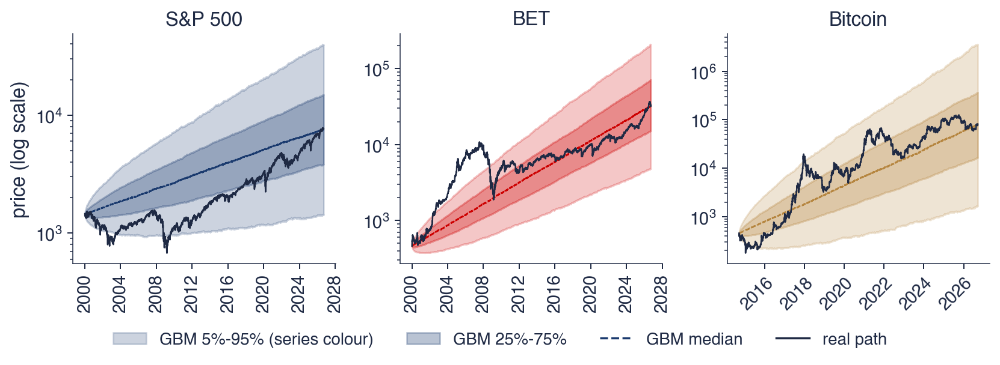

Academia de Studii Economice din București IDA Institute Digital Assets Blockchain Research Center AI4EFin Artificial Intelligence for Energy Finance Academia Română, Institutul de Prognoză Economică MSCA Digital Finance
IBM: International Business Machines (company) — compania International Business Machines
LCG: Linear Congruential Generator (generator congruențial liniar)
LLN: Law of Large Numbers (legea numerelor mari)
PCG64: Permuted Congruential Generator, 64-bit (NumPy default) — generatorul congruențial permutat pe 64 de biți (implicit în NumPy)
PMF: Probability Mass Function (funcția de masă de probabilitate)
RANDU: RANDU (IBM random number generator of the 1960s) — generatorul de numere aleatoare RANDU al IBM, anii 1960
SFE: Statistics of Financial Markets, Exercises (Quantlet collection of the textbook) — colecția de Quantlet-uri a manualului Statistics of Financial Markets
Întrebarea de azi, traseul și rezultatele învățării
Manual: Franke, Härdle & Hafner (2019), Statistics of Financial Markets, ed. a 5-a, cap. 3 (secț. 3.1–3.5) și cap. 4 (procese stochastice în timp discret)
Toate capitolele următoare ale cursului se sprijină pe un set restrîns de instrumente de probabilitate. Cozile groase, modelele de volatilitate, valoarea expusă la risc (VaR, Value at Risk) și eficiența pieței sînt toate afirmații despre variabile aleatoare, despre momentele lor, despre dependența dintre ele și despre procesele stochastice care le generează. Capitolul construiește aceste instrumente de la axiomele lui Kolmogorov pînă la mișcarea browniană geometrică (GBM, geometric Brownian motion), modelul de referință pentru prețurile activelor, și le testează pe date zilnice reale din perioada 2000–2026: S&P 500, DAX, indicele BET al Bursei de Valori București și, din 2014, Bitcoin.
Datele arată în mod repetat unde eșuează modelul de manual. Pentru S&P 500, VaR 1% empiric, pierderea depășită în 1% dintre zile, este 3,45%, în timp ce o distribuție Normală cu aceeași medie și aceeași abatere standard dă 2,80%. Randamentele zilnice sînt aproape necorelate, dar corelația dintre pătratul randamentului de azi și cel de ieri este 0,31. Abaterea standard a randamentului de azi crește de la 0,91% după zilele cele mai calme la 1,71% după cele mai agitate. Acestea sînt trăsăturile pe care GBM, cu randamentele lui logaritmice i.i.d. Normale, nu le poate produce.
Capitolul introduce și simularea. Numerele pseudo-aleatoare uniforme, transformarea inversă și metoda Monte Carlo transformă orice model într-o estimare a unei probabilități sau a unei medii, cu o eroare standard care scade ca \(1/\sqrt{N}\), unde \(N\) este numărul de simulări. Aceleași instrumente servesc în capitolele următoare la evaluarea opțiunilor, la calculul VaR pentru portofolii și la testarea măsurii în care un model reproduce riscul piețelor reale.

Traiectorii reale de preț în evantaiul GBM: pentru S&P 500 (stînga), BET (centru) și Bitcoin (dreapta), benzile colorate conțin 90% (deschis) și 50% (închis) din 4 000 de traiectorii GBM calibrate pe fiecare serie, linia întreruptă este mediana GBM, iar linia închisă este prețul real; axa prețului este logaritmică.
Ce veți putea face
Calculați medii, varianțe, covarianțe și corelații, precum și volatilitatea unui portofoliu.
Explicați de ce randamente necorelate pot fi totuși dependente și măsurați această dependență.
Folosiți media condiționată și varianța condiționată, elementele de bază ale modelelor GARCH.
Generați numere aleatoare prin transformarea inversă și estimați o probabilitate prin Monte Carlo, cu eroarea ei standard.
Definiți și simulați modelul binomial, mersul aleator, martingalul, zgomotul alb, procesul AR(1), procesul Wiener și GBM.
Planul capitolului
De la jocuri de noroc la axiomeProblema punctelor, spațiul de probabilitate al lui Kolmogorov, probabilitatea condiționată, regula lui Bayes și independența.
Media și varianțaLiniaritatea, inegalitatea lui Jensen, momentele, regula rădăcinii pătrate a timpului și marginea lui Cebîșev.
Distribuții comune și dependențăDistribuții comune și marginale, covarianța și corelația, varianța portofoliului, randamente necorelate, dar dependente.
AI pentru descoperire științificăO întrebare deschisă despre riscul de drawdown, rolul AI, verificările necesare și o idee de proiect.
RezumatFormulele de reținut și întrebări de autoevaluare.
De la jocuri de noroc la axiome
Probabilitatea a început ca o teorie a jocurilor echitabile și a devenit, trei secole mai tîrziu, o ramură a teoriei măsurii. Secțiunea urmează acest drum în patru pași. Problema punctelor, rezolvată de Pascal și Fermat în 1654, introduce ideea că valoarea corectă a unui joc este o valoare așteptată. Axiomele lui Kolmogorov din 1933 dau cadrul modern, spațiul de probabilitate. Probabilitatea condiționată și regula lui Bayes descriu cum schimbă informația probabilitățile, iar independența este cazul în care nu le schimbă.
Secțiunea se încheie cu un prim test pe date: dacă o zi de scădere a S&P 500 sau a BET face mai probabilă o nouă zi de scădere. Răspunsul diferă între cele două piețe și anunță o temă a întregului capitol, dependența dintre randamentele consecutive.
Doi jucători pariază pe un joc echitabil care se termină cînd unul dintre ei a cîștigat un număr fixat de runde. Dacă jocul este întrerupt înainte de final, cum trebuie împărțită miza? Răspunsul evident, proporțional cu rundele deja cîștigate, ignoră ce s-ar mai putea întîmpla. În corespondența lor din 1654, Blaise Pascal și Pierre de Fermat au propus în schimb ca miza să fie împărțită după probabilitatea fiecărui jucător de a cîștiga jocul, dacă acesta ar fi continuat.
În exemplul de pe slide, lui A îi mai trebuie o victorie, iar lui B două. Sînt necesare cel mult încă două runde. B cîștigă jocul doar dacă cîștigă ambele runde, ceea ce într-un joc echitabil se întîmplă cu probabilitatea \(1/2 \times 1/2 = 1/4\); în orice alt caz cîștigă A. A trebuie deci să primească 75% din miză, iar B 25%. Această parte este cîștigul așteptat al lui A: miza înmulțită cu probabilitatea de a o cîștiga.
Principiul depășește cu mult jocurile de noroc. Prețul corect al unui contract a cărui plată depinde de un eveniment viitor incert este o plată așteptată, calculată cu o probabilitate potrivită. Aceasta este logica evaluării derivatelor: modelul din secțiunea despre modelul binomial evaluează o opțiune exact în acest fel, ca medie pe traiectoriile de creștere și de scădere ale prețului activului suport.
Pe scurt
Doi jucători opresc un joc echitabil înainte de final: cum se împarte miza?
Blaise Pascal și Pierre de Fermat au rezolvat-o prin scrisori (1654): împărțim după probabilitatea de a cîștiga, nu după scor
Exemplu: lui A îi mai trebuie 1 victorie, lui B 2; cel mult încă două runde
B cîștigă doar dacă cîștigă ambele runde: probabilitatea \(1/4\)
A trebuie să primească 75% din miză: cîștigul lui așteptat
Aceeași idee stă azi la baza evaluării derivatelor: prețul corect este o plată așteptată
Timp de aproape trei secole, probabilitatea nu a avut o fundamentare comună. În lucrarea Grundbegriffe der Wahrscheinlichkeitsrechnung(Kolmogoroff, 1933), Andrei Kolmogorov a așezat-o pe axiomele teoriei măsurii. Un spațiu de probabilitate (probability space) este un triplet \((\Omega, \mathcal{F}, P)\). Mulțimea \(\Omega\) conține toate rezultatele posibile, de exemplu toate traiectoriile posibile ale pieței de mîine. Familia \(\mathcal{F}\) este o \(\sigma\)-algebră: evenimentele cărora li se poate atribui o probabilitate, închisă la complementare și la reuniuni numărabile. Funcția \(P\) atribuie fiecărui eveniment un număr din \([0, 1]\).
Trei axiome definesc funcția \(P\). Probabilitățile sînt nenegative, \(P(A) \ge 0\); evenimentul sigur are probabilitatea unu, \(P(\Omega) = 1\); iar pentru evenimente disjuncte \(A_1, A_2, \dots\), care nu pot avea loc simultan, probabilitatea ca unul dintre ele să aibă loc este suma probabilităților lor, \(P(\cup_i A_i) = \sum_i P(A_i)\). A treia axiomă, aditivitatea numărabilă (countable additivity), permite trecerea la limită: ea dă sens probabilității unui eveniment definit printr-un șir infinit, cum este convergența unei medii de eșantion.
Toate noțiunile capitolului decurg din aceste trei reguli. O variabilă aleatoare este o funcție măsurabilă definită pe \(\Omega\), media ei este o integrală în raport cu \(P\), independența este o factorizare a lui \(P\), iar un proces stochastic este o familie de variabile aleatoare definite pe același spațiu de probabilitate.
Pe scurt
Un spațiu de probabilitate\((\Omega, \mathcal{F}, P)\)Kolmogoroff (1933)
\(\Omega\): toate rezultatele posibile (toate traiectoriile posibile ale pieței de mîine)
\(\mathcal{F}\): evenimentele cărora le putem atribui o probabilitate (o \(\sigma\)-algebră)
\(P\): o funcție de la evenimente la \([0, 1]\)
Axiomele, pentru orice eveniment \(A \in \mathcal{F}\)
\(P(A) \ge 0\): nicio probabilitate nu este negativă
\(P(\Omega) = 1\): unul dintre rezultate are loc sigur
\(P(\cup_i A_i) = \sum_i P(A_i)\) pentru \(A_1, A_2, \dots\) disjuncte (oricare două nu pot avea loc simultan): probabilitatea ca unul dintre ele să aibă loc este suma probabilităților
Tot restul (media, independența, procese) se construiește pe aceste trei reguli
Andrei Nikolaevici Kolmogorov (1903–1987) a lucrat la Universitatea de Stat din Moscova. Contribuția lui principală la teoria probabilităților a fost transformarea ei într-o ramură a teoriei măsurii: evenimentele sînt mulțimi, probabilitatea este o măsură, iar mediile sînt integrale. Acest pas a dat teoriei rigoarea analizei matematice și a lămurit ce este, matematic, o probabilitate.
Celelalte contribuții ale lui apar de-a lungul cursului. Definiția modernă a mediei condiționate, folosită în secțiunea despre condiționare, îi aparține. A contribuit și la teoria proceselor Markov și a lucrat asupra turbulenței și a complexității șirurilor. Testul Kolmogorov–Smirnov din Capitolul 6, care compară o funcție de repartiție empirică cu una teoretică, îi poartă numele.
Pe scurt
Andrei Nikolaevici Kolmogorov (1903–1987), Universitatea de Stat din Moscova
A făcut din probabilitate o ramură a teoriei măsurii: evenimentele sînt mulțimi, probabilitatea este o măsură
Alte contribuții: media condiționată în forma ei modernă, procese Markov, turbulență, complexitate
Testul Kolmogorov–Smirnov (Capitolul 6) îi poartă numele
Probabilitatea condiționată (conditional probability) a lui \(A\) dat fiind \(B\), pentru \(P(B) > 0\), este
\[P(A \mid B) = \frac{P(A \cap B)}{P(B)},\]
(4.1)
unde \(A \cap B\) este evenimentul că au loc amîndouă. În cuvinte, dintre cazurile în care are loc \(B\),\(P(A \mid B)\) este proporția celor în care are loc și \(A\). Condiționarea restrînge spațiul de probabilitate la \(B\) și rescalează \(P\) astfel încît spațiul restrîns să aibă probabilitatea totală unu.
Regula lui Bayes (Bayes' rule) inversează sensul condiționării:
\[P(B \mid A) = \frac{P(A \mid B)\,P(B)}{P(A)}.\]
(4.2)
Aici \(P(B)\) este probabilitatea lui \(B\) înainte de a observa \(A\), probabilitatea a priori, iar \(P(B \mid A)\) este probabilitatea actualizată după ce \(A\) este cunoscut, probabilitatea a posteriori. Utilizarea tipică în finanțe este un semnal de avertizare: din probabilitatea ca semnalul să apară dată fiind o criză, regula lui Bayes dă probabilitatea unei crize dat fiind că semnalul a apărut, care depinde și de cît de frecvente sînt crizele și semnalele false.
Două evenimente sînt independente dacă \(P(A \cap B) = P(A)P(B)\), ceea ce este echivalent cu \(P(A \mid B) = P(A)\) cînd \(P(B) > 0\): faptul că \(B\) a avut loc nu schimbă probabilitatea lui \(A\). Independența este o proprietate a măsurii de probabilitate, nu a evenimentelor înseși, și este ipoteza din spatele majorității modelelor simple ale capitolului, de la arborele binomial la GBM.
Pe scurt
Probabilitatea condiționată: \(P(A \mid B) = P(A \cap B)/P(B)\), pentru \(P(B) > 0\)
\(A, B\): două evenimente; \(A \cap B\): au loc amîndouă
în cuvinte: dintre cazurile în care are loc \(B\), proporția celor în care are loc și \(A\)
Regula lui Bayes: \(P(B \mid A) = P(A \mid B)P(B)/P(A)\)
\(P(B)\): probabilitatea lui \(B\) înainte de a afla \(A\); \(P(B \mid A)\): probabilitatea actualizată după ce observăm \(A\)
inversează sensul condiționării: de la „semnal dată fiind criza” la „criză dat fiind semnalul”
Evenimente independente: \(P(A \cap B) = P(A)P(B)\), adică \(P(A \mid B) = P(A)\)
faptul că \(B\) a avut loc nu schimbă probabilitatea lui \(A\)
Definițiile pot fi testate pe randamentele zilnice ale indicilor. Pentru S&P 500 în perioada 2000–2026, proporția zilelor de scădere este 46,3%. După o zi de scădere, frecvența unei noi zile de scădere este 43,4%, puțin mai mică. Două zile de scădere la rînd apar în 20,1% din perechile de zile consecutive; în ipoteza de independență probabilitatea ar fi \(0{,}463^2 = 21{,}4\%\). Diferența este mică, iar într-o primă aproximare semnul randamentului S&P 500 este aproape independent de la o zi la alta.
BET se comportă diferit. După o zi de scădere, probabilitatea unei noi zile de scădere este 50,0%, față de 42,6% după o zi de creștere: semnul randamentului persistă. Explicația obișnuită este tranzacționarea redusă (thin trading). Pe o piață cu mai puține tranzacții și cu acțiuni mai puțin lichide, prețurile se ajustează la știri în mai multe zile, nu dintr-odată, astfel încît o scădere de azi tinde să fie urmată de o nouă ajustare mîine. Același efect apare mai jos ca autocorelație pozitivă de ordinul întîi a randamentelor BET.
Pe scurt
S&P 500, 2000–2026: \(P(\text{zi de scădere}) = 46{,}3\%\)
după o zi de scădere: \(P(\text{scădere} \mid \text{scădere ieri}) = 43{,}4\%\)
două zile de scădere la rînd: 20,1% în date
în ipoteza de independență: \(P(\text{scădere})^2 = 21{,}4\%\), apropiat de date
BET: 50,0% după o zi de scădere, față de 42,6% după o zi de creștere
semnul randamentului persistă de la o zi la alta
o consecință a lichidității reduse: prețurile se ajustează la știri în mai multe zile
Un model probabilist este un spațiu de probabilitate \((\Omega, \mathcal{F}, P)\), iar cele trei axiome ale lui Kolmogorov fixează regulile pentru \(P\). Ideea lui Pascal și Fermat, că valoarea corectă este o valoare așteptată, revine în modelul binomial și în evaluarea opțiunilor.
Probabilitatea condiționată măsoară cum schimbă informația șansele, iar regula lui Bayes inversează sensul condiționării. Pe date zilnice, S&P 500 este aproape de independența semnelor, în timp ce BET arată persistență, un prim semn că randamentele consecutive nu sînt neapărat independente.
Pe scurt
Spațiul de probabilitate \((\Omega, \mathcal{F}, P)\) și trei axiome
Valoare corectă = valoare așteptată: ideea lui Pascal și Fermat
Probabilitatea condiționată măsoară cum schimbă informația șansele
Sinteza secțiunii
Secțiunea a fixat cadrul pentru restul capitolului: rezultate, evenimente și o măsură de probabilitate care satisface trei axiome. Probabilitatea condiționată și independența sînt primele instrumente pentru dependența dintre evenimente. Secțiunea următoare atașează numere rezultatelor, prin variabile aleatoare, și descrie distribuțiile lor.
Variabile aleatoare și distribuții
O variabilă aleatoare transformă rezultatele unui spațiu de probabilitate în numere: randamentul logaritmic de mîine, numărul zilelor de creștere dintr-o săptămînă, pierderea unui portofoliu. Distribuția ei este descrisă de funcția de masă (PMF, probability mass function) în cazul discret, de densitatea de probabilitate (PDF, probability density function) în cazul continuu și de funcția de repartiție (CDF, cumulative distribution function) în ambele cazuri. Inversa funcției de repartiție, funcția cuantilă, dă valoarea expusă la risc.
Secțiunea trece apoi la date. Ea compară numărul săptămînal de zile de creștere ale S&P 500 cu o distribuție binomială, iar CDF empirică a randamentelor zilnice cu CDF a distribuției Normale, cu atenție specială la coada stîngă, unde se măsoară riscul.
O variabilă aleatoare (random variable) este o funcție \(X: \Omega \to \mathbb{R}\) care atribuie un număr fiecărui rezultat (măsurabilă în raport cu \(\mathcal{F}\), astfel încît evenimente ca \(\{X \le x\}\) să aibă o probabilitate). Randamentul logaritmic de mîine, numărul zilelor de creștere dintr-o săptămînă și pierderea unui portofoliu într-o lună sînt toate variabile aleatoare definite pe același spațiu de probabilitate ca rezultatele pieței.
O variabilă aleatoare este discretă dacă ia un număr finit sau numărabil de valori \(x_i\). Distribuția ei este dată de PMF (funcția de masă), \(p(x_i) = P(X = x_i)\), cu \(\sum_i p(x_i) = 1\). Numărul zilelor de creștere dintr-o săptămînă este discret, cu valori de la 0 la 5.
O variabilă aleatoare este continuă dacă probabilitățile intervalelor sînt arii sub o densitate: \(P(a < X \le b) = \int_a^b f(x)\,dx\). Funcția \(f\) este PDF (densitatea de probabilitate), cu \(f \ge 0\) și aria totală \(\int f = 1\). Un singur punct are aria zero, deci \(P(X = x) = 0\) pentru orice \(x\): pentru un randament continuu, doar intervalele de valori au probabilitate pozitivă. Densitatea nu este ea însăși o probabilitate și poate depăși valoarea unu. Tratarea din manual este în Franke, Härdle & Hafner (2019), secț. 3.1.
Pe scurt
O variabilă aleatoare\(X: \Omega \to \mathbb{R}\) asociază un număr fiecărui rezultat
randamentul logaritmic de mîine, numărul zilelor de creștere dintr-o săptămînă, pierderea unui portofoliu
Discretă: un număr finit sau numărabil de valori \(x_i\)
PMF (probability mass function, funcția de masă de probabilitate): \(p(x_i) = P(X = x_i)\), cu \(\sum_i p(x_i) = 1\)
\(p(x_i)\): probabilitatea valorii \(x_i\); probabilitățile tuturor valorilor însumează 1
Continuă: \(P(a < X \le b) = \int_a^b f(x)\,dx\)
probabilitatea unui interval \((a, b]\) este aria de sub \(f\) între \(a\) și \(b\)
\(f\) este PDF (probability density function, densitatea de probabilitate): \(f \ge 0\), iar aria totală \(\int f = 1\)
un singur punct nu are arie: \(P(X = x) = 0\) pentru orice \(x\)
CDF (funcția de repartiție) a lui \(X\) este \(F(x) = P(X \le x)\), probabilitatea ca \(X\) să nu depășească pragul \(x\). Orice funcție de repartiție este nedescrescătoare și continuă la dreapta și crește de la \(F(-\infty) = 0\) la \(F(\infty) = 1\). Funcția de repartiție există pentru orice variabilă aleatoare, discretă sau continuă, ceea ce o face limbajul comun al capitolului. Pentru \(X\) continuă, densitatea este derivata ei, \(f = F'\).
Cuantila (quantile) de ordin \(\alpha \in (0, 1)\) inversează funcția de repartiție:
cel mai mic \(x\) pentru care \(P(X \le x) \ge \alpha\). Infimumul face definiția valabilă și acolo unde \(F\) are salturi sau porțiuni constante, unde o inversă obișnuită nu există. Funcția \(\alpha \mapsto F^{-1}(\alpha)\) este funcția cuantilă (quantile function).
Două cuantile apar în tot cursul. Mediana este \(q_{0{,}5}\), valoarea care împarte distribuția în două jumătăți. Cuantila de 1% a randamentelor zilnice este randamentul depășit în 99% dintre zile: un număr negativ, care măsoară cît de rea este o zi rea.
Pe scurt
CDF (cumulative distribution function, funcția de repartiție): \(F(x) = P(X \le x)\)
probabilitatea ca \(X\) să nu depășească pragul \(x\)
nedescrescătoare, continuă la dreapta, de la \(F(-\infty) = 0\) la \(F(\infty) = 1\)
pentru \(X\) continuă, densitatea este derivata ei: \(f = F'\)
VaR (Value at Risk, valoarea expusă la risc) la nivelul 1% este minus cuantila de 1% a randamentelor:
\[\text{VaR}_{1\%} = -q_{0{,}01}.\]
(4.4)
Pentru randamentele zilnice, cuantila \(q_{0{,}01}\) este negativă, iar semnul minus o transformă într-o pierdere pozitivă: VaR 1% este pierderea depășită cu probabilitatea 1%. Cursul notează nivelul prin probabilitatea din coadă, VaR 1% sau VaR 5%, astfel încît \(\text{VaR}_\alpha = -q_\alpha\). Estimarea și backtesting-ul VaR sînt subiectul Capitolului 10.
În practică \(F\) este necunoscută și se estimează din date. Pentru randamentele observate \(r_1, \dots, r_n\),CDF empirică (empirical CDF) este
\[\hat F(x) = \frac1n\,\#\{t : r_t \le x\},\]
proporția zilelor cu randamentul cel mult \(x\);\(\#\{\cdot\}\) numără zilele din mulțime, iar căciula marchează o estimare. \(\hat F\) este o funcție în trepte care sare cu \(1/n\) în fiecare observație. Cuantilele ei sînt randamentele ordonate, iar VaR 1% empiric este minus randamentul sub care se află 1% dintre zile.
Pe scurt
VaR (Value at Risk, valoarea expusă la risc) 1%: \(\text{VaR}_{1\%} = -q_{0{,}01}\)
\(q_{0{,}01}\): cuantila de 1% a randamentelor, un număr negativ
semnul minus o transformă în pierdere: pierderea depășită cu probabilitatea 1%
Probabilități condiționate pentru evenimentul D, randamente logaritmice zilnice
Întrebare pentru sală Pentru S&P 500, P(scădere azi | scădere ieri) = 43,4% este chiar sub P(scădere) = 46,3%. Butonul ▶ ridică pragul x: evenimentul D devine o pierdere de peste x%. La x = 2%, cît este P(D | D ieri) față de P(D) = 4,27%?
Răspuns
11,85%, de 2,8 ori P(D). Două pierderi de peste 2% la rînd au frecvența 0,51%, față de 0,18% sub independență. Semnul randamentului aproape nu persistă la S&P 500, dar pierderile mari vin grupate: volatility clustering. La BET persistă și semnul, la x = 0: 50,0% după o zi de scădere față de 42,6% după o zi fără scădere, efect al tranzacționării rare (thin trading).
Întrebare pentru sală Pentru S&P 500, varianța lui K (1,16) este puțin sub varianța binomială 5p(1 − p) = 1,24. Butonul ▶ trece la DAX și BET. Ce se întîmplă pentru BET, al cărui randament zilnic are autocorelația de ordinul 1 egală cu 0,109?
Răspuns
Varianța lui K depășește valoarea binomială: 1,47 față de 1,24, raportul 1,18. Distribuția binomială presupune zile independente; cu autocorelația pozitivă a randamentelor BET, zilele de creștere vin mai des una după alta, deci săptămînile cu multe sau cu puține zile de creștere sînt mai frecvente. Media rămîne aproape de 5p: 2,67 față de 2,70. Pentru S&P 500, cu autocorelația −0,099, raportul este 0,93; pentru DAX tot 0,93.
Panoul din stînga arată o variabilă aleatoare discretă, \(K\), numărul zilelor de creștere ale S&P 500 într-o săptămînă completă de cinci zile, calculat pe 1 144 de săptămîni. Barele închise sînt frecvențele din date, iar barele deschise distribuția binomială \(B(5, p)\), care presupune cinci zile independente, fiecare de creștere cu probabilitatea \(p = 0{,}537\). Cele două seturi de bare sînt apropiate: media lui \(K\) este 2,67 în date, față de 2,69 pentru distribuția binomială, iar varianța este 1,16, față de 1,24.
Panoul din dreapta arată o variabilă aleatoare continuă, randamentul logaritmic zilnic. Histograma estimează densitatea și este comparată cu densitatea Normală cu aceeași medie și aceeași abatere standard. Curba Normală ratează forma datelor în două locuri: densitatea empirică are un vîrf mult mai înalt și mai îngust în jurul lui zero, iar cozile ei se întind mult dincolo de zona în care densitatea Normală este practic zero.
Contrastul dintre cele două panouri anunță o temă a cursului. Numărarea zilelor de creștere și de scădere ignoră mărimea mișcărilor, iar pentru această numărătoare modelul binomial cu zile independente funcționează bine. Mărimea mișcărilor este locul în care modelul Normal eșuează; cozile groase (heavy tails) și vîrful înalt sînt faptele stilizate (stylised facts) din Capitolul 2.
Pe scurt
Stînga: \(K\) = numărul zilelor de creștere dintr-o săptămînă completă a S&P 500 (1 144 de săptămîni)
comparat cu \(B(5, p)\), distribuția binomială: 5 zile, fiecare de creștere cu probabilitatea \(p = 0{,}537\)
media 2,67 față de 2,69; varianța 1,16 față de 1,24
Dreapta: randamentele logaritmice zilnice, o variabilă aleatoare continuă; histograma estimează PDF
Distribuția binomială se potrivește bine lui \(K\); densitatea distribuției Normale nu surprinde nici vîrful, nici cozile randamentelor (Capitolul 2)
Întrebare pentru sală Bitcoin se tranzacționează în fiecare zi, deci capitolul anualizează cu A = 365. Abaterea standard zilnică este 3,485%. Cît este volatilitatea anuală?
Răspuns
66,6% = 3,485 × √365. Cu A = 252, ca pentru acțiuni, ar fi 55,3%. Media anuală este 43,1% cu A = 365 (29,8% cu A = 252). Volatilitatea crește cu √A, media cu A, iar ambele presupun randamente i.i.d. Excesul de boltire 11,96 arată că distribuția zilnică nu este Normală, chiar dacă regula rădăcinii pătrate a timpului folosește doar varianța.
Zile cu |r − media| > kσ: date, distribuția Normală și marginea lui Cebîșev
Întrebare pentru sală Pentru k = 2, inegalitatea lui Cebîșev permite pînă la 25% din zile. Ce pondere din zilele S&P 500 este la peste 2 abateri standard de medie?
Răspuns
4,90% (329 de zile), aproape de 4,55% în distribuția Normală. La 2 abateri standard datele seamănă cu distribuția Normală; diferența apare în coadă: la k = 4 sînt 46 de zile (0,69%), de 108 ori mai mult decît 0,0063% în distribuția Normală, iar la k = 6 sînt 12 zile, față de 1,3 × 10−5 zile așteptate. Marginea lui Cebîșev, 1/k², este valabilă pentru orice distribuție cu varianță finită, de aceea este mult peste date.
Întrebare pentru sală La nivelul 1%, VaR empiric al S&P 500 (3,45%) este de 1,24 ori VaR din distribuția Normală cu aceeași medie și abatere standard (2,80%). Butonul ▶ coboară nivelul α de la 5% la 0,1%. Cît devine raportul la α = 0,1%?
Răspuns
Circa 1,94: VaR 0,1% este 7,22% în date și 3,72% în distribuția Normală. La α = 5% raportul este 0,94 (1,85% față de 1,97%). Dacă diferența ar fi doar de scală, raportul ar fi același la orice nivel; el crește spre coadă, deci problema este forma distribuției: un vîrf mai înalt și cozi mai groase. P(r < −5%) este 0,34% în date și 1,7 × 10−3% în distribuția Normală, de 199 de ori mai puțin.
Panoul din stînga compară CDF empirică a 6 714 randamente logaritmice zilnice ale S&P 500 cu funcția de repartiție Normală cu aceeași medie și aceeași abatere standard. Pe scara liniară, curbele par asemănătoare. Randamentul zilnic median este 0,063%, iar \(\hat F(0) = 46{,}3\%\): în 46,3% dintre zile randamentul nu a fost pozitiv. Panoul din dreapta arată coada stîngă pe o axă verticală logaritmică, unde diferența devine vizibilă. Linia orizontală punctată marchează nivelul de 1%, iar cele două linii verticale cuantila de 1% empirică și cea Normală.
VaR 1% empiric este 3,45%, iar VaR 1% Normal este 2,80%: modelul Normal subestimează pierderea depășită în 1% dintre zile. Mai adînc în coadă, diferența crește. O scădere zilnică de peste 3% a avut loc în 1,55% dintre zile, față de 0,63% în distribuția Normală. O scădere de peste 5% a avut loc în 0,34% dintre zile, de 199 de ori probabilitatea Normală de \(1{,}7 \times 10^{-3}\%\).
Pe scara logaritmică, coada empirică descrește lent, în timp ce coada Normală se curbează brusc în jos, ca \(e^{-x^2/2}\). Pentru orice distribuție cu cozi mai groase decît cele Normale, raportul dintre cele două probabilități din coadă crește deci fără limită pe măsură ce pragul înaintează în coadă. Orice măsură de risc calculată dintr-un model Normal moștenește această eroare, motiv pentru care capitolele următoare modelează cozile direct.
Pe scurt
\(n = 6\,714\) zile; mediana \(0{,}063\%\); în \(\hat F(0) = 46{,}3\%\) din zile randamentul nu a fost pozitiv
VaR 1%: empiric 3,45%, în distribuția Normală 2,80%; \(P(r < -3\%)\): 1,55% față de 0,63%
\(P(r < -5\%)\): 0,34% în date, de 199 de ori mai mult decît în distribuția Normală (\(1{,}7 \times 10^{-3}\%\))
O variabilă aleatoare discretă este descrisă de PMF, iar una continuă de PDF; funcția de repartiție le descrie pe amîndouă. Cuantilele inversează funcția de repartiție, iar VaR 1% este minus cuantila de 1% a randamentelor, \(\text{VaR}_{1\%} = -q_{0{,}01}\).
Pentru S&P 500, numărul zilelor de creștere dintr-o săptămînă este bine descris de o distribuție binomială, dar mărimea randamentelor zilnice nu este Normală. Coada empirică este mult mai groasă: o scădere de peste 5% este de circa două sute de ori mai frecventă decît prezice distribuția Normală.
Pe scurt
PMF pentru variabile discrete, PDF pentru cele continue; CDF este definită pentru ambele
Cuantilele inversează CDF; VaR 1% este minus cuantila de 1%
Cozile CDF empirice sînt mult mai groase decît cele ale distribuției Normale
Sinteza secțiunii
Variabilele aleatoare, funcțiile lor de repartiție și cuantilele lor sînt obiectele pe care se definesc măsurile de risc. Prima comparație cu datele a arătat că distribuția Normală descrie acceptabil centrul randamentelor zilnice, dar subestimează coada stîngă. Secțiunea următoare rezumă distribuțiile prin momentele lor: media, varianța și momentele de ordin superior, care măsoară asimetria și grosimea cozilor.
Media și varianța
O distribuție este adesea rezumată prin cîteva numere. Media îi localizează centrul, varianța îi măsoară împrăștierea, iar momentele de ordinul trei și patru măsoară asimetria și grosimea cozilor. Secțiunea definește aceste momente, enunță regulile după care se combină și le aplică la două întrebări pe datele S&P 500: cum se scalează cifrele zilnice la un an și cît de rară este de fapt o zi aflată la patru abateri standard de medie.
suma valorilor ponderate cu probabilitățile lor în cazul discret și integrala în raport cu densitatea în cazul continuu. Geometric, ea este centrul de greutate al distribuției. Media există doar dacă \(E|X| < \infty\). Distribuția Cauchy, o distribuție stabilă din Capitolul 3, are cozi atît de groase încît această integrală diverge și nu are medie. Media unei funcții de \(X\) se calculează direct, \(E[g(X)] = \int g(x) f(x)\,dx\), fără a deduce mai întîi distribuția lui \(g(X)\).
Proprietatea cea mai utilă a mediei este liniaritatea:
\[E[aX + bY + c] = a\,E[X] + b\,E[Y] + c,\]
(4.5)
pentru constante \(a, b, c\) și orice variabile aleatoare \(X\) și \(Y\), dependente sau nu. Rezultă că randamentul așteptat al unui portofoliu este media ponderată a randamentelor așteptate ale activelor, cu ponderile portofoliului, oricare ar fi dependența dintre active.
Liniaritatea nu se extinde la funcții neliniare: în general \(E[g(X)] \ne g(E[X])\).Inegalitatea lui Jensen dă sensul pentru \(g\) convexă: \(E[g(X)] \ge g(E[X])\), cu inegalitate strictă dacă \(X\) nu este constantă. De exemplu, \(E[e^X] > e^{E[X]}\). Dacă \(X\) este un randament logaritmic, \(e^X\) este randamentul simplu brut, deci randamentul simplu mediu depășește exponențiala randamentului logaritmic mediu. Această diferență este volatility drag-ul din Capitolul 1 și reapare mai jos ca diferență între media și mediana GBM.
Pe scurt
Media (valoarea așteptată): \(E[X] = \sum_i x_i p(x_i)\) sau \(E[X] = \int x f(x)\,dx\)
\(x_i\), \(p(x_i)\): valorile și probabilitățile lor; \(f\): densitatea
centrul de greutate al distribuției; există doar dacă \(E|X| < \infty\) (nu și pentru Cauchy, Capitolul 3)
A unei funcții: \(E[g(X)] = \int g(x) f(x)\,dx\), fără a afla distribuția lui \(g(X)\)
A doua formă rezultă din dezvoltarea pătratului și din liniaritate. Abaterea standard (standard deviation) \(\sigma = \sqrt{\text{Var}(X)}\) se măsoară în unitățile lui \(X\); pentru randamente se numește volatilitate. Adunarea unei constante nu schimbă riscul, iar înmulțirea cu o constantă înmulțește varianța cu pătratul ei: \(\text{Var}(aX + b) = a^2\,\text{Var}(X)\). O poziție de două ori mai mare are o volatilitate de două ori mai mare și o varianță de patru ori mai mare.
Momentele lui \(X\) sînt \(E[X^k]\),\(k = 1, 2, \dots\); momentele centrate folosesc \(X - \mu\). Două momente centrate standardizate descriu forma unei distribuții. Coeficientul de asimetrie (skewness) \(E[(X - \mu)^3]/\sigma^3\) măsoară asimetria și este zero pentru orice distribuție simetrică, inclusiv distribuția Normală. Coeficientul de boltire (kurtosis) \(E[(X - \mu)^4]/\sigma^4\) măsoară greutatea cozilor față de centru și este egal cu 3 pentru distribuția Normală.
Excesul de boltire (excess kurtosis), boltirea minus 3, este deci zero pentru distribuția Normală și pozitiv pentru distribuțiile cu cozi groase. Randamentele zilnice ale indicilor bursieri au un exces de boltire în jur de 10, cum arată secțiunea despre GBM, iar Capitolul 2 studiază acest fapt în detaliu.
Exemplul transformă momentele zilnice ale randamentelor logaritmice ale S&P 500 în momente anuale. În perioada 2000–2026, randamentul logaritmic zilnic mediu este 0,0247%, iar abaterea standard zilnică este \(\sigma = 1{,}213\%\); un an are \(A = 252\) de zile de tranzacționare. Presupunem că randamentele zilnice sînt i.i.d., independente și identic distribuite. Randamentele logaritmice se adună în timp, deci randamentul logaritmic anual este suma celor \(A\) randamente zilnice, \(\sum_{t=1}^{A} r_t\).
Din liniaritatea mediei, media anuală este de \(A\) ori media zilnică: \(252 \times 0{,}0247\% = 6{,}2\%\) pe an. Pentru varianță, varianța unei sume este suma varianțelor plus de două ori suma tuturor covarianțelor, cum arată (4.7) din secțiunea următoare; sub independență covarianțele sînt zero, deci \(\text{Var}(\sum r_t) = A\sigma^2\). Volatilitatea anuală este \(\sigma\sqrt{A} = 1{,}213\% \times \sqrt{252} = 19{,}3\%\).
Aceasta este regula rădăcinii pătrate a timpului (square-root-of-time rule): pe \(h\) perioade, media crește ca \(h\), iar volatilitatea ca \(\sqrt{h}\). Regula este folosită peste tot pentru anualizarea volatilității și pentru scalarea unui VaR pe o zi la orizonturi mai lungi. Ea depinde de absența autocorelației; cu randamente persistente, autocorelațiile pozitive fac varianța sumei mai mare decît \(h\sigma^2\), iar cele negative o fac mai mică.
Pe scurt
S&P 500, randamentele logaritmice zilnice \(r_t\)
media zilnică \(0{,}0247\%\), abaterea standard zilnică \(\sigma = 1{,}213\%\)
\(A = 252\): numărul de zile de tranzacționare pe an
Presupunem randamente zilnice i.i.d. (independente și identic distribuite)
randamentul logaritmic anual este suma celor \(A\) randamente zilnice: \(\sum_{t=1}^{A} r_t\)
Media: \(E[\sum r_t] = A \times 0{,}0247 = 6{,}2\%\) pe an
din liniaritatea mediei
Varianța: \(\text{Var}(\sum r_t) = A\,\sigma^2\), pentru că toate covarianțele sînt zero
Inegalitatea lui Cebîșev (Chebyshev's inequality) mărginește probabilitatea unei abateri mari folosind doar media și varianța. Pentru orice \(X\) cu varianță finită și orice \(k > 1\),
\[P(|X - \mu| \ge k\sigma) \le \frac{1}{k^2},\]
(4.6)
unde \(k\) este distanța față de medie, în abateri standard. Deoarece folosește doar două momente, marginea este valabilă pentru orice distribuție; prețul acestei generalități este că, de obicei, ea este departe de valoarea efectivă.
Pentru \(k = 4\) și S&P 500 în perioada 2000–2026, cele trei răspunsuri diferă mult. Cebîșev permite cel mult \(1/16 = 6{,}25\%\) dintre zile la patru sau mai multe abateri standard de medie. Distribuția Normală dă 0,0063%. Datele conțin 46 de astfel de zile, 0,69% din eșantion.
Datele se află între cele două extreme. Distribuția Normală este mult prea optimistă: zilele de 4 sigma sînt mult mai frecvente în date decît prezice ea. Cazul cel mai defavorabil al lui Cebîșev, valabil pentru orice distribuție cu varianță finită, este prea pesimist. Un model util al randamentelor trebuie să se situeze între ele, cu cozi mai groase decît cele Normale, dar mai subțiri decît în cazul cel mai defavorabil, iar aceasta este sarcina distribuțiilor cu cozi groase din Capitolul 5.
Pe scurt
Inegalitatea lui Cebîșev: pentru orice \(X\) cu varianță finită, \(P(|X - \mu| \ge k\sigma) \le 1/k^2\)
\(\mu\), \(\sigma\): media și abaterea standard; \(k > 1\): distanța față de medie, în abateri standard
folosește doar media și varianța, deci este valabilă pentru orice distribuție
\(k = 4\), S&P 500, 2000–2026
marginea Cebîșev: cel mult 6,25% din zile
distribuția Normală: 0,0063%
în date: 46 de zile, 0,69%
Frecvența observată se află între cele două valori
distribuția Normală este mult prea optimistă; cazul cel mai nefavorabil al lui Cebîșev este prea pesimist
Media este liniară pentru orice variabile aleatoare, în timp ce varianța se scalează cu pătratul unei constante. Inegalitatea lui Jensen explică de ce media unei funcții convexe depășește funcția aplicată mediei, originea volatility drag-ului.
Pentru randamente i.i.d., media crește proporțional cu orizontul \(h\), iar volatilitatea proporțional cu \(\sqrt{h}\). Inegalitatea lui Cebîșev mărginește probabilitățile din cozi pentru orice distribuție; pentru S&P 500, frecvența zilelor de 4 sigma se află între această margine și valoarea Normală, mult mai mică.
Pe scurt
Media este liniară; varianța se scalează cu pătratul
Pentru randamente i.i.d., media crește cu \(h\), iar volatilitatea cu \(\sqrt{h}\)
Cebîșev mărginește probabilitățile din cozi pentru orice distribuție
Sinteza secțiunii
Primele două momente rezumă poziția și împrăștierea, iar momentele standardizate de ordinul trei și patru rezumă asimetria și grosimea cozilor. Exemplele secțiunii au tratat o singură serie odată și au presupus zile independente. Secțiunea următoare studiază mai multe variabile aleatoare împreună, prin distribuția lor comună, și măsoară dependența dintre ele.
Distribuții comune și dependență
Portofoliile, acoperirile de risc și contagiunea implică simultan mai multe variabile aleatoare. Distribuția lor comună conține mai multă informație decît distribuțiile separate (marginale): ea spune și cum se mișcă variabilele împreună. Secțiunea definește distribuțiile comune și marginale, covarianța și corelația, precum și varianța unei sume, care dă riscul unui portofoliu. Apoi separă două noțiuni confundate adesea, necorelarea și independența, și arată pe date că randamentele zilnice sînt aproape necorelate, dar departe de a fi independente.
Pentru două variabile aleatoare \(X\) și \(Y\),CDF comună (joint CDF) este \(F(x, y) = P(X \le x, Y \le y)\), probabilitatea ca ambele variabile să se afle simultan sub pragurile lor. Pentru două randamente zilnice, ea este probabilitatea ca ambele piețe să scadă sub niveluri date în aceeași zi, mărimea care contează pentru o prăbușire simultană.
Funcția de repartiție marginală a lui \(X\) se obține lăsînd celălalt prag să tindă la infinit: \(F_X(x) = F(x, \infty)\). Ea este distribuția lui \(X\) singure, oricare ar fi valoarea lui \(Y\). Distribuțiile marginale se pot obține din distribuția comună, dar nu și invers: multe distribuții comune au aceleași marginale și diferă doar prin dependență.
Dacă \((X, Y)\) are o PDF comună\(f(x, y)\), probabilitatea oricărei regiuni \(B\) din plan este volumul de sub \(f\) deasupra lui \(B\):
\[P((X, Y) \in B) = \iint_B f(x, y)\,dx\,dy.\]
Densitatea marginală a lui \(X\) se obține integrînd după \(Y\),\(f_X(x) = \int f(x, y)\,dy\).
Pe scurt
CDF comună: \(F(x, y) = P(X \le x, Y \le y)\)
probabilitatea ca ambele variabile să fie simultan sub pragurile lor
pentru două randamente: ambele piețe scad sub nivelurile date în aceeași zi
CDF marginală: \(F_X(x) = F(x, \infty)\)
distribuția lui \(X\) singură, oricare ar fi valoarea lui \(Y\)
PDF comună\(f(x, y)\): \(P((X, Y) \in B) = \iint_B f(x, y)\,dx\,dy\)
\(B\): o regiune din plan; probabilitatea este volumul de sub \(f\) deasupra lui \(B\)
densitatea marginală: \(f_X(x) = \int f(x, y)\,dy\), prin integrare după \(y\)
unde \(\mu_X\) și \(\mu_Y\) sînt mediile. Ea este pozitivă cînd \(X\) și \(Y\) tind să fie simultan peste mediile lor și negativă cînd una tinde să fie peste medie, iar cealaltă sub. Unitatea ei de măsură este produsul unităților lui \(X\) și \(Y\), deci mărimea ei este greu de interpretat direct.
Corelația (correlation) elimină unitățile prin împărțirea la cele două abateri standard, \(\rho = \text{Cov}(X, Y)/(\sigma_X\sigma_Y)\), și se află întotdeauna în \([-1, 1]\). Ea măsoară doar dependența liniară: \(|\rho| = 1\) dacă și numai dacă \(Y = a + bX\), cu constantele \(a\) și \(b \ne 0\). O corelație apropiată de zero exclude o relație liniară, nu orice relație, ceea ce face subiectul slide-ului despre independență.
Într-un portofoliu, \(a\) și \(b\) sînt ponderile. Termenul de covarianță poate crește sau reduce riscul: cu ponderi pozitive, o covarianță negativă sau mică reduce varianța portofoliului sub ce ar sugera varianțele separate. Pentru \(N\) active, formula devine \(\sigma_p^2 = w^\top \Sigma w\), unde \(w\) este vectorul ponderilor, \(w^\top\) transpusul lui, iar \(\Sigma\) matricea de covarianță \(N \times N\), care conține varianțele pe diagonală și covarianțele în afara ei.
Întrebare pentru sală Butonul ▶ mută ponderea a a S&P 500 în portofoliul S&P 500/DAX de la 0 la 1. La ce pondere este volatilitatea portofoliului cea mai mică?
Răspuns
La a* = (σ2² − Cov)/(σ1² + σ2² − 2Cov) = 0,69, cu σp = 1,163%, față de 1,186% la a = 0,5. Ponderea S&P 500 este mai mare pentru că volatilitatea lui este mai mică (1,221% față de 1,429%), dar nu 1: cu ρ = 0,60, o parte de DAX reduce încă riscul. Pentru S&P 500/BET, cu ρ = 0,21: a* = 0,60 și σp = 1,025%.
Întrebare pentru sală Corelația zilnică S&P 500–BET pe întreaga perioadă este 0,21. Cît este în zilele din 2020?
Răspuns
0,63, în 242 de zile comune, de trei ori valoarea pe întreaga perioadă. În 2008 corelația este 0,28, în 2017 0,20. Pentru S&P 500 și DAX: 0,69 în 2020, 0,62 în 2008 și 0,57 în 2017, față de 0,60 pe toată perioada. Corelația crește în anii de criză, adică exact cînd diversificarea ar fi necesară.
Cele două diagrame de dispersie arată perechi de randamente logaritmice zilnice în zilele de tranzacționare comune. Piețele au sărbători diferite, de aceea prețurile se aliniază mai întîi pe datele în care ambele piețe au funcționat, iar randamentele se calculează apoi din prețurile aliniate; pentru S&P 500 și DAX rezultă 6 605 zile. Fiecare punct este o zi, cu randamentul S&P 500 pe axa orizontală și randamentul DAX (stînga) sau BET (dreapta) pe axa verticală.
S&P 500 și DAX au corelația 0,60: norul de puncte este clar înclinat de-a lungul diagonalei. S&P 500 și BET au corelația 0,21, iar norul este mult mai rotund: cele două piețe au mai puține șocuri comune în aceeași zi.
În centru, ambii nori sînt aproximativ eliptici, forma pe care ar produce-o o distribuție Normală bivariată. Punctele extreme spun altceva: cele mai mari scăderi și creșteri tind să aibă loc în aceleași zile pe ambele piețe, de-a lungul diagonalei. Crizele lovesc toate piețele deodată, deci dependența din cozi este mai puternică decît sugerează corelația, calculată mai ales din zilele obișnuite.
Pe scurt
Doar zilele de tranzacționare comune: întîi se unesc prețurile, apoi se calculează randamentele (\(n = 6\,605\) zile pentru S&P 500 și DAX)
S&P 500 și DAX: \(\rho = 0{,}60\); S&P 500 și BET: \(\rho = 0{,}21\)
Norul este eliptic în centru, dar zilele extreme apar simultan: crizele lovesc toate piețele deodată
Aplicăm (4.7) unui portofoliu cu jumătate din valoare în fiecare indice. Abaterile standard zilnice sînt \(\sigma_1 = 1{,}22\%\) pentru S&P 500 și \(\sigma_2 = 1{,}43\%\) pentru DAX, covarianța este 1,045 (în procente la pătrat), iar corelația 0,60. Cu ponderile \(a = b = 0{,}5\), avem \(a^2 = b^2 = 0{,}25\) și \(2ab = 0{,}5\).
Termenii de varianță contribuie cu \(0{,}25\sigma_1^2 + 0{,}25\sigma_2^2 = 0{,}883\), iar termenul de covarianță cu \(0{,}5 \times 1{,}045 = 0{,}522\), deci \(\sigma_p^2 = 1{,}405\), iar volatilitatea portofoliului este \(\sigma_p = 1{,}19\%\) pe zi. Volatilitatea medie a celor doi indici este 1,32%. Diferența este efectul diversificării: deoarece \(\rho < 1\), portofoliul este mai puțin riscant decît media părților lui. Același calcul pentru S&P 500 și BET, care au o corelație mai mică, dă o volatilitate a portofoliului de 1,04%, față de o medie de 1,33%: cu cît corelația este mai mică, cu atît reducerea riscului este mai mare.
Diversificarea funcționează doar prin \(\rho < 1\); cu \(\rho = 1\), volatilitatea portofoliului este media ponderată a volatilităților. Dificultatea este că corelațiile nu sînt constante. Într-o prăbușire a pieței corelațiile cresc, cum sugerează diagramele de dispersie de pe slide-ul anterior, deci reducerea riscului se micșorează exact atunci cînd este mai necesară.
Două variabile aleatoare \(X\) și \(Y\) sînt independente dacă funcția lor de repartiție comună se factorizează, \(F(x, y) = F_X(x)F_Y(y)\) pentru orice \(x\) și \(y\). Independența este mult mai puternică decît corelația nulă: ea implică \(E[g(X)h(Y)] = E[g(X)]E[h(Y)]\) pentru toate funcțiile \(g\) și \(h\) pentru care mediile există, de exemplu pătrate sau valori absolute. Luînd \(g\) și \(h\) egale cu identitatea obținem \(E[XY] = E[X]E[Y]\), adică o covarianță nulă. Variabilele independente sînt deci necorelate.
Reciproca este falsă. Fie \(X \sim N(0, 1)\) și \(Y = X^2\). Atunci \(\text{Cov}(X, X^2) = E[X^3] - E[X]E[X^2] = 0\), deoarece momentele impare ale unei distribuții simetrice sînt nule: \(X\) și \(Y\) sînt necorelate. Dar \(Y\) este o funcție de \(X\), deci, odată cunoscut \(X\),\(Y\) este cunoscut exact: dependența este completă. Corelația nu o detectează pentru că relația nu este liniară; ea este simetrică, iar valorile pozitive și negative ale lui \(X\) se compensează.
Există o excepție importantă. Dacă \(X\) și \(Y\) sînt comun Normale, corelația nulă implică independența, deoarece densitatea Normală comună se factorizează cînd covarianța este zero. De aceea modelele construite pe distribuția Normală pot trata corelația ca pe o descriere completă a dependenței, iar această descriere eșuează pentru randamente, care nu sînt comun Normale.
Pe scurt
\(X\) și \(Y\) sînt independente dacă \(F(x, y) = F_X(x)F_Y(y)\) pentru orice \(x, y\)
CDF comună este produsul CDF marginale
atunci \(E[g(X)h(Y)] = E[g(X)]E[h(Y)]\) pentru toate funcțiile \(g, h\) (de exemplu, pătrate sau valori absolute)
Independente \(\Rightarrow\) necorelate (\(g, h\) = identitatea); reciproca este falsă
Exemplu: \(X \sim N(0, 1)\), \(Y = X^2\)
\(\text{Cov}(X, X^2) = E[X^3] = 0\): necorelate
dar \(Y\) este o funcție de \(X\): complet dependente
Excepție: pentru variabile cu distribuție Normală comună (bivariată), necorelate \(\Leftrightarrow\) independente
Întrebare pentru sală Butonul ▶ mărește lagul h de la 1 la 20. La h = 20, mai iese Corr(rt², rt−20²) a S&P 500 din banda ±1,96/√n = ±0,024?
Răspuns
Da: 0,164 la lagul 20, față de 0,313 la lagul 1, în timp ce corelația randamentelor la lagul 20 este 0,014, în bandă. La lagul 1, corelația pătratelor este 0,31 (S&P 500), 0,15 (DAX), 0,33 (BET) și 0,14 (Bitcoin). La lagul 20 rămîne peste bandă pentru DAX (0,116) și BET (0,090); pentru Bitcoin (0,026) intră în banda ±0,030. Volatility clustering durează săptămîni. Banda este o valoare de referință asimptotică pentru o serie i.i.d., nu un test exact pentru fiecare lag.
Panoul din stînga arată perechi simulate \((X, X^2)\), cu \(X\) Normală standard. Punctele se află exact pe o parabolă, totuși corelația de eșantion este \(-0{,}038\), aproape de zero. Figura face concret slide-ul anterior: dependență perfectă, corelație absentă.
Panoul din dreapta arată același fenomen în datele reale. Pentru fiecare serie, bara închisă este autocorelația de ordinul întîi a randamentelor zilnice, \(\text{Corr}(r_t, r_{t-1})\), iar bara deschisă autocorelația de ordinul întîi a pătratelor randamentelor, \(\text{Corr}(r_t^2, r_{t-1}^2)\). Liniile întrerupte marchează banda \(\pm 1{,}96/\sqrt{n}\): valorile compatibile cu o corelație nulă la nivelul de 5% pentru o serie i.i.d. de lungime \(n\). Autocorelațiile randamentelor sînt mici: \(-0{,}099\) pentru S&P 500, \(-0{,}017\) pentru DAX și \(-0{,}022\) pentru Bitcoin. Valoarea negativă a S&P 500 provine mai ales din zilele de criză, cînd mișcările mari au fost urmate de reveniri parțiale.
Pătratele randamentelor se comportă cu totul altfel. Autocorelațiile lor, 0,31 pentru S&P 500, 0,15 pentru DAX și 0,14 pentru Bitcoin, sînt mult în afara benzii: o mișcare mare azi, de orice semn, este urmată de o mișcare mare mîine. Acesta este volatility clustering, iar el arată că randamentele zilnice sînt dependente, deși aproape necorelate. BET este excepția pentru randamentele înseși: \(\text{Corr}(r_t, r_{t-1}) = 0{,}109\), autocorelația pozitivă produsă de tranzacționarea redusă, pe care o arătase deja exemplul zilelor de scădere din prima secțiune.
Pe scurt
Stînga: \(Y = X^2\) simulat, corelația de selecție \(-0{,}038\), deși \(Y\) este determinat de \(X\)
Covarianța intră în varianța oricărui portofoliu prin (4.7); o corelație sub unu este sursa diversificării, iar creșterea ei în crize îi este limita. Independența implică necorelarea, dar necorelarea nu implică independența, cu excepția variabilelor comun Normale.
Randamentele zilnice sînt aproape necorelate, dar pătratele lor sînt clar corelate, deci randamentele nu sînt independente. Dependența se află în mărimea mișcărilor, nu în sensul lor, ceea ce motivează varianța condiționată din secțiunea următoare.
Pe scurt
Covarianța intră în varianța oricărui portofoliu
Independența implică necorelarea, nu invers
Randamentele: aproape necorelate, dar pătratele lor sînt corelate, deci nu sînt independente
Sinteza secțiunii
Corelația descrie partea liniară a dependenței dintre două variabile. Ea determină varianța portofoliului, dar nu surprinde dependența randamentelor prin mărimea lor, vizibilă în autocorelația pătratelor randamentelor. Secțiunea următoare descrie direct această dependență, prin condiționare pe trecut: media condiționată și varianța condiționată.
Media condiționată și varianța condiționată
A prognoza înseamnă a condiționa: a înlocui distribuția necondiționată a randamentului de mîine cu distribuția lui dat fiind ce se știe azi. Secțiunea definește media condiționată (conditional expectation), cea mai bună prognoză în sensul erorii pătratice medii, și varianța condiționată (conditional variance), care măsoară incertitudinea rămasă. Legea varianței totale împarte riscul total într-o parte din interiorul grupurilor cu condiții asemănătoare și o parte dintre ele. Pe datele S&P 500 și Bitcoin, condiționarea pe mărimea mișcării de ieri abia schimbă media randamentului de azi, dar îi schimbă substanțial abaterea standard. Acest rezultat duce direct la modelele ARCH și GARCH.
Dacă \((X, Y)\) are o densitate comună, densitatea condiționată a lui \(Y\) dat fiind \(X = x\) este \(f(y \mid x) = f(x, y)/f_X(x)\): secțiunea prin densitatea comună la \(X = x\), rescalată prin densitatea marginală astfel încît să integreze la unu. Ea este distribuția lui \(Y\) odată ce se știe că \(X = x\).Media condiționată este media acestei distribuții,
\[E[Y \mid X = x] = \int y\,f(y \mid x)\,dy.\]
Ca funcție de variabila aleatoare \(X\),\(E[Y \mid X]\) este ea însăși o variabilă aleatoare.
Media condiționată este cea mai bună prognoză a lui \(Y\) pe baza lui \(X\): dintre toate funcțiile \(g\), ea minimizează eroarea pătratică medie \(E[(Y - g(X))^2]\). Pentru randamente, informația de condiționare este de obicei întregul trecut. Notînd cu \(\mathcal{F}_{t-1}\) toată informația disponibilă pînă ieri, \(E[r_t \mid \mathcal{F}_{t-1}]\) este prognoza randamentului de azi dată fiind această informație.
Proprietatea turnului (tower property), sau legea mediilor iterate, afirmă că
\[E\big[E[Y \mid X]\big] = E[Y].\]
(4.8)
Media prognozelor condiționate, luată pe toate valorile lui \(X\), redă media necondiționată. O prognoză care este uneori mare și alteori mică trebuie să fie corectă în medie.
Ca și media condiționată, ea este o variabilă aleatoare, funcție de \(X\). Pentru randamente, \(\text{Var}(r_t \mid \mathcal{F}_{t-1})\) este varianța randamentului de azi dat fiind trecutul, mărimea pe care o prognozează modelele de volatilitate.
Legea varianței totale (law of total variance) descompune varianța necondiționată:
Primul termen este varianța medie din interiorul grupurilor definite de \(X\), varianța din interiorul grupurilor (within). Al doilea este varianța mediilor grupurilor, varianța dintre grupuri (between): cît de mult diferă mediile condiționate între ele. Identitatea rezultă din proprietatea turnului aplicată lui \(Y^2\) și lui \(Y\).
Descompunerea răspunde unei întrebări practice: riscul provine din schimbările randamentului așteptat sau din schimbările împrăștierii în jurul lui? Dacă partea dintre grupuri este mică, cunoașterea lui \(X\) abia îmbunătățește prognoza lui \(Y\), dar poate schimba totuși prognoza varianței lui.
Fie \(X\) regimul pieței și \(Y = r\) randamentul zilnic, în procente. Regimul calm are probabilitatea 0,7, media 0,05% și abaterea standard 0,8%; regimul agitat are probabilitatea 0,3, media \(-0{,}10\%\) și abaterea standard 2%. Distribuția necondiționată a lui \(r\) este un amestec de două distribuții.
Din proprietatea turnului (4.8), media necondiționată este media mediilor regimurilor, ponderată cu probabilitățile lor: \(E[r] = 0{,}7 \times 0{,}05 + 0{,}3 \times (-0{,}10) = 0{,}005\%\). Pentru varianță, (4.9) dă două părți. Partea din interiorul regimurilor este \(E[\text{Var}(r \mid X)] = 0{,}7 \times 0{,}8^2 + 0{,}3 \times 2^2 = 1{,}648\). Partea dintre regimuri este \(\text{Var}(E[r \mid X]) = 0{,}7(0{,}05 - 0{,}005)^2 + 0{,}3(-0{,}10 - 0{,}005)^2 = 0{,}0047\). Varianța totală este 1,653, iar abaterea standard 1,286%.
Aproape tot riscul provine din varianțele diferite ale regimurilor, nu din mediile lor diferite. Exemplul arată și de ce astfel de amestecuri au cozi groase: majoritatea zilelor provin din distribuția calmă, care produce un vîrf înalt și îngust, iar o parte din cea agitată, care produce mișcările mari.
Întrebare pentru sală În exemplul cu două regimuri, abaterea standard a randamentului este 1,286%. Cît devine dacă regimul agitat are abaterea standard 3% în loc de 2%?
Răspuns
1,776%: varianța în interiorul regimurilor crește la 0,7 × 0,8² + 0,3 × 3² = 3,148, iar componenta dintre regimuri rămîne 0,0047, deci Var(r) = 3,153. Media ponderată a abaterilor standard, 0,7 × 0,8 + 0,3 × 3 = 1,46%, subestimează riscul: se adună varianțe, nu abateri standard. În date, pentru S&P 500, componenta dintre chintile este 0,009% din varianța totală.
Întrebare pentru sală Cu 5 grupuri (chintile), raportul abaterilor standard dintre grupul cel mai agitat și cel mai calm este 1,88 pentru S&P 500. Butonul ▶ trece de la 2 la 10 grupuri. Cît devine raportul la 10 grupuri?
Răspuns
2,22: 2,03% în grupul cel mai agitat față de 0,92% în cel mai calm. Cu 2 grupuri raportul este 1,43: grupurile extreme sînt mai extreme cînd sînt mai înguste. Componenta dintre grupuri a varianței totale rămîne neglijabilă: 0,054% din total la 10 grupuri, 0,009% la 5. Mișcarea de ieri spune mult despre riscul de azi și aproape nimic despre media de azi.
Graficul condiționează randamentul de azi pe mărimea mișcării de ieri. Zilele sînt împărțite în cinci grupuri, chintilele (quintiles) lui \(|r_{t-1}|\): Q1 conține zilele care urmează celor mai calme 20% dintre zile, iar Q5 zilele care urmează celor mai agitate 20%. Panoul din stînga arată media lui \(r_t\) în fiecare grup, iar cel din dreapta abaterea lui standard, pentru S&P 500 și Bitcoin; liniile întrerupte sînt abaterile standard necondiționate.
Media condiționată a S&P 500 se află între 0,006% și 0,042% pe zi în cele cinci grupuri, fără un tipar care să poată fi folosit pentru prognoză. Abaterea standard condiționată, în schimb, crește constant, de la 0,91% în Q1 la 1,71% în Q5, un raport Q5/Q1 de 1,88. Pentru Bitcoin creșterea este mai mică, un raport de 1,33, dar prezentă. Mișcarea de ieri nu prezice sensul randamentului de azi, dar îi prezice mărimea.
Legea varianței totale (4.9) face afirmația exactă. Pentru S&P 500, varianța totală de 1,469 se împarte într-o parte din interiorul chintilelor de 1,469 și o parte dintre chintile de 0,00013: diferențele dintre mediile condiționate explică 0,01% din varianță. Condiționarea pe trecut lasă media aproape neschimbată și mută varianța.
Pe scurt
Chintilele lui \(|r_{t-1}|\): Q1 = cele mai calme 20% dintre zilele de ieri, Q5 = cele mai agitate 20%
Media condiționată: între \(0{,}006\%\) și \(0{,}042\%\) pentru S&P 500, fără un tipar util
Abaterea standard condiționată: S&P 500 de la 0,91% (Q1) la 1,71% (Q5), raportul Q5/Q1 1,88; Bitcoin, raportul 1,33
Legea varianței totale, S&P 500: 1,469 = 1,469 + 0,00013; componenta dintre grupuri reprezintă 0,01% din total
unde \(\mu_t = E[r_t \mid \mathcal{F}_{t-1}]\) este media condiționată, aproape constantă pentru randamente, iar \(\sigma_t^2 = \text{Var}(r_t \mid \mathcal{F}_{t-1})\) este varianța condiționată, care se schimbă odată cu știrile. Problema modelării volatilității este specificarea modului în care \(\sigma_t^2\) depinde de trecut.
Modelul ARCH (autoregressive conditional heteroskedasticity, heteroscedasticitate condiționată autoregresivă) al lui Engle (1982) pune \(\sigma_t^2 = \omega + \alpha r_{t-1}^2\): varianța de azi este un nivel de bază \(\omega > 0\) plus o fracțiune \(\alpha \ge 0\) din pătratul randamentului de ieri. O mișcare mare ieri, de orice semn, crește varianța de azi, exact tiparul din graficul pe chintile. Modelul GARCH al lui Bollerslev (1986) adaugă varianța anterioară,
unde \(\beta \ge 0\) măsoară persistența: cu un \(\beta\) mare, o varianță ridicată rămîne ridicată multe zile. Aceste modele sînt estimate și testate în Capitolul 9.
Distribuția necondiționată a lui \(r_t\) într-un astfel de model este un amestec de distribuții cu \(\sigma_t\) diferite, ca în exemplul cu două regimuri. Ea are deci cozi mai groase decît distribuția Normală chiar dacă \(z_t\) este Normal. Heteroscedasticitatea condiționată explică astfel ambele fapte stilizate întîlnite pînă acum: volatility clustering și cozile groase.
Pe scurt
Scriem randamentul ca \(r_t = \mu_t + \sigma_t z_t\), cu \(z_t\) i.i.d., media 0, varianța 1
\(\mu_t = E[r_t \mid \mathcal{F}_{t-1}]\): media condiționată, aproape constantă
\(\sigma_t^2 = \text{Var}(r_t \mid \mathcal{F}_{t-1})\): varianța condiționată, care se schimbă cu știrile
\(E[Y \mid X]\) este cea mai bună prognoză a lui \(Y\) în sensul erorii pătratice medii, iar proprietatea turnului o readuce, în medie, la media necondiționată. Legea varianței totale împarte riscul într-o parte din interiorul grupurilor și o parte dintre grupuri.
Pentru randamentele zilnice, media condiționată este aproape constantă, în timp ce varianța condiționată variază puternic în funcție de trecut. Modelarea lui \(\sigma_t^2\) ca funcție de pătratele randamentelor trecute și de varianțele trecute este sarcina modelelor ARCH și GARCH.
Pe scurt
\(E[Y \mid X]\) este cea mai bună prognoză; proprietatea turnului o readuce, în medie, la \(E[Y]\)
Randamente: media condiționată aproape constantă, varianța condiționată puternic variabilă în timp
Modelele ARCH și GARCH descriu dinamica lui \(\sigma_t^2\)
Sinteza secțiunii
Condiționarea pe trecut separă ce este previzibil în randamente de ce nu este. Sensul randamentelor zilnice este aproape imprevizibil, în timp ce mărimea lor este clar previzibilă din mișcările recente, iar legea varianței totale arată cît de puțin contribuie mediile condiționate la risc. Secțiunea următoare trece de la prognoze individuale la medii pe multe observații: cînd și cît de repede converg mediile de eșantion la mediile populației.
Legea numerelor mari și CLT
Statistica și simularea se bazează amîndouă pe medii. Legea numerelor mari (LLN, law of large numbers) afirmă că media de eșantion converge la media populației, iar teorema limită centrală (CLT, central limit theorem) arată cît de repede și cu ce distribuție a erorilor. Secțiunea enunță ambele teoreme și le aplică mărimii celei mai simple din finanțe, randamentul mediu al unui indice bursier. Răspunsul este descurajant: nici 26 de ani de date zilnice nu estimează precis randamentul așteptat al S&P 500.
Fie \(X_1, X_2, \dots\) i.i.d. cu \(E|X| < \infty\) și media \(\mu = E[X]\), iar \(\bar X_n = \frac1n\sum_{i=1}^n X_i\) media de eșantion. LLN (legea numerelor mari) afirmă că \(\bar X_n \to \mu\) cînd \(n \to \infty\). Acesta este motivul pentru care mediile, frecvențele și estimările Monte Carlo funcționează: o frecvență este media de eșantion a unui indicator, iar o estimare Monte Carlo este media de eșantion a unor valori simulate.
CLT (teorema limită centrală) adaugă viteza. Dacă, în plus, varianța \(\sigma^2\) este finită,
astfel încît, pentru \(n\) mare, media de eșantion standardizată are aproximativ distribuția Normală standard. Eroarea lui \(\bar X_n\) este de ordinul \(\sigma/\sqrt{n}\), eroarea standard (standard error): pentru a o înjumătăți, eșantionul trebuie să fie de patru ori mai mare. CLT și rolul ei pentru randamente sînt discutate în Capitolul 2.
Ambele teoreme au condiții. Cu varianță infinită, sumele nu converg la distribuția Normală, ci la distribuții \(\alpha\)-stabile, subiectul Capitolului 3. Ambele teoreme cer și o formă de independență; există versiuni pentru date dependente, dar randamentele dependente, de exemplu cele cu volatility clustering, converg mai încet.
Pe scurt
LLN (law of large numbers, legea numerelor mari): pentru \(X_i\) i.i.d. cu \(E|X| < \infty\), \(\bar X_n \to \mu\) cînd \(n \to \infty\)
\(\bar X_n = \frac1n\sum_{i=1}^n X_i\): media de selecție; \(\mu = E[X]\): media adevărată
motivul pentru care funcționează mediile, frecvențele și estimările Monte Carlo
Întrebare pentru sală Pe 2000–2026, media zilnică a S&P 500 are t = 1,67. Cu aceeași medie și volatilitate, cîți ani de date ar trebui pentru t = 2?
Răspuns
Circa 38 de ani: n = (2s/r̄)² = (2 × 1,213/0,0247)² = 9 633 de zile. t crește cu √n, deci pentru un t de 2/1,67 = 1,20 ori mai mare trebuie de 1,43 ori mai multe zile. Pentru o eroare standard de două ori mai mică trebuie de patru ori mai multe zile (26 856). Media cumulată din 2000 este încă negativă după 100, 1 000 și 2 500 de zile.
Întrebare pentru sală Pe 2000–2026, media zilnică a S&P 500 are t = 1,67. Butonul ▶ mută începutul eșantionului de la 2000 la 2020. Ce valoare are t pentru eșantionul care începe în 2009?
Răspuns
2,83: media zilnică este 0,0480% (12,1% pe an), eroarea standard 0,0169%. Eșantionul din 2009 începe după criza din 2008. Din 2003, t = 2,38; din 2020, t = 1,64 cu doar 1 687 de zile. Intervalul de 95% al mediei anuale este [3,7%; 20,4%] din 2009 și [−1,1%; 13,5%] din 2000. Media estimată depinde mult de începutul eșantionului; un început ales după ce s-au văzut datele nu mai dă un test valid.
Graficul arată media cumulată a randamentelor logaritmice zilnice ale S&P 500, media primelor \(n\) zile, pe măsură ce \(n\) crește de la o zi la întregul eșantion, pe o axă orizontală logaritmică. Liniile subțiri sînt medii cumulate ale unor serii simulate i.i.d. Normale cu aceeași medie și aceeași abatere standard, iar curbele întrerupte sînt banda \(\mu \pm 1{,}96\sigma/\sqrt{n}\). Toate traiectoriile se stabilizează în interiorul benzii care se îngustează, cum prevăd LLN și CLT.
Pe 26,6 ani, media zilnică este 0,0247%, iar eroarea standard este \(\sigma/\sqrt{n} = 0{,}0148\%\). Statistica \(t\), media împărțită la eroarea ei standard, este 1,67. O valoare a lui \(|t|\) peste 1,96 ar indica o medie semnificativ diferită de zero la nivelul de 5%, deci nici acest eșantion lung nu respinge o medie nulă.
Pe scară anuală, media este 6,2%, iar intervalul de încredere de 95% este \([-1{,}1\%; 13{,}5\%]\), un interval care include atît o pierdere, cît și un randament dublu față de estimarea punctuală. Pentru a ajunge la \(t = 3\) cu aceeași medie și aceeași volatilitate ar fi necesari circa 86 de ani de date. Mediile randamentelor se învață foarte încet, pentru că sînt mici în raport cu volatilitatea. Volatilitățile, în schimb, se estimează mult mai precis din aceleași date, unul dintre motivele pentru care modelele de risc sînt mai fiabile decît prognozele de randament.
Pe scurt
S&P 500, 26,6 ani: media \(0{,}0247\%\) pe zi, eroarea standard \(\sigma/\sqrt{n} = 0{,}0148\%\)
\(t\) = media / eroarea standard \(= 1{,}67\); \(|t| > 1{,}96\) ar indica o medie semnificativ diferită de 0, la pragul de 5%
Media anuală 6,2%, intervalul de încredere de 95%: \([-1{,}1\%; 13{,}5\%]\)
nici 26 de ani de date nu ajung pentru a estima precis randamentul așteptat
pentru \(t = 3\), la această medie și volatilitate, ar fi nevoie de circa 86 de ani de date
LLN garantează convergența mediilor, iar CLT le dă eroarea, de ordinul \(\sigma/\sqrt{n}\). Pentru randamentul mediu al unui indice bursier, această eroare este mare: după 26 de ani, randamentul așteptat al S&P 500 nu este încă semnificativ diferit de zero. Aceleași două teoreme justifică simularea Monte Carlo, subiectul secțiunii următoare.
Numere aleatoare și Monte Carlo
Metodele Monte Carlo estimează o medie sau o probabilitate simulînd de multe ori variabila aleatoare de interes și calculînd media rezultatelor. Ele au nevoie de două ingrediente: un șir de numere care se comportă ca extrageri uniforme independente și o metodă care transformă extragerile uniforme în extrageri din orice distribuție. Secțiunea le tratează pe amîndouă, de la generatoarele congruențiale liniare și eșecul lui RANDU la transformarea inversă, apoi estimează probabilitatea unei pierderi lunare mari a S&P 500 și compară estimarea Monte Carlo cu valoarea exactă.
Metoda Monte Carlo estimează \(\theta = E[g(X)]\) prin media de eșantion a unor valori simulate,
\[\hat\theta_N = \frac1N\sum_{i=1}^N g(X_i),\]
unde \(X_1, \dots, X_N\) sînt extrageri independente din distribuția lui \(X\),\(g\) este funcția de interes, iar \(N\) numărul de simulări. O probabilitate este un caz particular: \(P(A) = E[\mathbf{1}_A]\), unde indicatorul \(\mathbf{1}_A\) este 1 dacă \(A\) are loc și 0 altfel, deci estimarea lui \(P(A)\) este proporția simulărilor în care \(A\) are loc.
Cele două teoreme limită din secțiunea anterioară dau proprietățile estimatorului. LLN asigură \(\hat\theta_N \to \theta\), iar CLT dă eroarea: eroarea standard este \(\text{sd}(g(X))/\sqrt{N}\), care poate fi ea însăși estimată din simulări. Eroarea nu depinde de dimensiunea lui \(X\), motiv pentru care Monte Carlo este metoda preferată pentru problemele în multe dimensiuni.
Metoda a primit numele cazinoului din Monaco de la Stanislaw Ulam și John von Neumann, la Los Alamos, în anii 1940, și a fost descrisă prima dată într-o publicație de Metropolis & Ulam (1949). În finanțe (Glasserman, 2003), ea evaluează opțiunile dependente de traiectorie, calculează VaR pentru portofolii (Capitolul 10) și evaluează scenarii de stres: în general, orice medie fără formulă analitică.
Pe scurt
Estimăm \(\theta = E[g(X)]\) prin \(\hat\theta_N = \frac1N\sum_{i=1}^N g(X_i)\), cu \(X_i\) simulate
\(\theta\): mărimea necunoscută; \(g\): o funcție de variabila simulată; \(N\): numărul de simulări
o probabilitate este o medie: \(P(A) = E[\mathbf{1}_A]\), cu \(\mathbf{1}_A = 1\) dacă \(A\) are loc și 0 altfel
LLN face ca \(\hat\theta_N \to \theta\); CLT dă eroarea \(\text{sd}(g(X))/\sqrt{N}\), unde \(\text{sd}\) este abaterea standard
Ulam și von Neumann au numit metoda după cazinoul din Monaco (Los Alamos, anii 1940) Metropolis & Ulam (1949)
Calculatoarele nu produc numere aleatoare; ele produc șiruri deterministe care trec testele statistice de aleatorism, numite numere pseudo-aleatoare. Construcția clasică este LCG (linear congruential generator, generatorul congruențial liniar):
\[x_{k+1} = (a\,x_k + c) \bmod M, \qquad u_k = x_k/M \in [0, 1).\]
(4.12)
Fiecare întreg \(x_{k+1}\) se calculează din cel anterior; \(a\) este multiplicatorul, \(c\) incrementul, iar \(M\) modulul, iar \(\bmod M\) dă restul împărțirii la \(M\). Împărțirea la \(M\) dă un număr \(u_k\) din \([0, 1)\).
Șirul este complet determinat de sămînța (seed) \(x_0\): aceeași sămînță dă întotdeauna același șir. Acesta este un avantaj, pentru că face simulările reproductibile, și o constrîngere, pentru că șirul trebuie să se repete la un moment dat. Perioada este numărul de valori după care șirul se repetă și este cel mult \(M\), deoarece \(x_k\) poate lua doar \(M\) valori.
Generatoarele reale folosesc de aceea module foarte mari, iar perioada trebuie să fie mult mai lungă decît numărul de extrageri din orice simulare. O perioadă lungă este necesară, dar nu suficientă: extragerile trebuie să se comporte și ca independente, ceea ce testează slide-urile următoare.
Quantlet-ul SFErangen1 folosește un generator mic, cu \(a = 5\),\(c = 1\),\(M = 16\) și sămînța \(x_0 = 7\), astfel încît fiecare pas poate fi urmărit de mînă. Primul pas este \(x_1 = (5 \times 7 + 1) \bmod 16 = 36 \bmod 16 = 4\). Continuînd, obținem șirul 7, 4, 5, 10, 3, 0, 1, 6, 15, 12, 13, 2, 11, 8, 9, 14 și apoi din nou 7.
Fiecare întreg de la 0 la 15 apare exact o dată înainte ca șirul să revină la sămînță: perioada este 16, valoarea maximă posibilă, \(M\). Atingerea perioadei maxime depinde de parametri. Cu \(a = 4\) și aceleași \(c\),\(M\) și sămînță, șirul ajunge într-un punct fix și repetă o singură valoare la nesfîrșit, o perioadă de 1.
O perioadă completă garantează că valorile sînt răspîndite uniform pe \(\{0, \dots, M-1\}\), dar distribuțiile marginale uniforme nu sînt suficiente. Numerele consecutive trebuie să pară și independente: perechile, tripletele și tuplurile mai lungi trebuie să umple uniform pătratul, cubul și hipercubul unitate. Slide-ul următor arată un generator folosit pe scară largă care a eșuat exact la acest test.
M = 16: perioada pentru fiecare multiplicator a, cu c și x0 alese
Exemplu lucrat: pașii unui LCG și perioada lui
\[x_{k+1} = (a\,x_k + c) \bmod M, \qquad u_k = \frac{x_k}{M}, \qquad M = 16\]
Întrebare pentru sală Cu a = 4, c = 1 și x0 = 7, după cîți pași rămîne șirul blocat și la ce valoare?
Răspuns
După doi pași: x1 = 29 mod 16 = 13, x2 = 53 mod 16 = 5, apoi 4 × 5 + 1 = 21 ≡ 5, deci șirul rămîne 5 (perioada 1). Slide-ul spune „după un pas”; primul pas duce însă la 13. Cu M = 16 și c impar, perioada maximă 16 apare exact cînd a − 1 este multiplu de 4 (a = 1, 5, 9, 13, condiția Hull–Dobell); a = 1 dă însă șirul 7, 8, 9, …, cu perioadă maximă și fără nimic aleator.
Întrebare pentru sală Butonul ▶ schimbă sămînța x0 a RANDU (numere impare de la 1 la 99). Cîte valori distincte ia combinația 9uk − 6uk+1 + uk+2 pentru x0 = 99?
Răspuns
15, de la −5 la 9, ca pentru orice sămînță impară. Relația vine din multiplicator: 65539 = 216 + 3, deci a² = 6a − 9 (mod 231) și xk+2 = 6xk+1 − 9xk (mod 231), oricare ar fi x0. Corelația perechilor rămîne mică (0,0078 pentru x0 = 99), deci un test pe perechi nu vede defectul. Cu PCG64, combinația ia 29 998 de valori diferite în 29 998 de triplete.
RANDU a fost generatorul de numere aleatoare al calculatoarelor IBM în anii 1960, cu \(x_{k+1} = 65539\,x_k \bmod 2^{31}\). Panoul din stînga reprezintă perechile consecutive \((u_k, u_{k+1})\): ele umplu uniform pătratul unitate, iar corelația dintre valorile consecutive este 0,003. În două dimensiuni, RANDU pare un generator bun.
Problema apare în trei dimensiuni. Deoarece \(65539 = 2^{16} + 3\), combinația \(9u_k - 6u_{k+1} + u_{k+2}\) este întotdeauna un număr întreg, iar panoul din mijloc arată că ea ia doar 15 valori, de la \(-5\) la 9. Fiecare triplet de extrageri consecutive se află deci pe unul dintre 15 plane paralele din cubul unitate, iar spațiul dintre ele rămîne gol. Marsaglia (1968) a arătat că toate generatoarele congruențiale multiplicative au această structură de rețea, într-un articol al cărui titlu îl preia slide-ul.
Panoul din dreapta calculează aceeași combinație pentru PCG64 (permuted congruential generator, 64 de biți), generatorul implicit din NumPy: ea variază continuu, fără să se concentreze pe valori întregi. Generatoarele moderne, cum sînt Mersenne Twister (Matsumoto & Nishimura, 1998) și PCG64, au perioade incomparabil mai lungi decît orice simulare și trec baterii de teste în multe dimensiuni. Orice simulare cu RANDU care folosește trei sau mai multe extrageri consecutive pentru un scenariu moștenește structura lui.
Pe scurt
RANDU, IBM, anii 1960: \(x_{k+1} = 65539\,x_k \bmod 2^{31}\); perechile par uniforme (stînga), corelația \(0{,}003\)
Dar \(9u_k - 6u_{k+1} + u_{k+2}\) ia doar 15 valori întregi, de la \(-5\) la \(9\): toate tripletele stau pe 15 plane Marsaglia (1968)
Generatoare moderne: Mersenne Twister Matsumoto & Nishimura (1998), PCG64 (implicit în NumPy, panoul din dreapta)
Al doilea ingredient al metodei Monte Carlo transformă numerele uniforme în extrageri dintr-o distribuție dată. Transformarea inversă (inverse transform) se sprijină pe o teoremă scurtă: dacă \(U \sim U(0, 1)\), distribuția uniformă pe \([0, 1]\), cu \(P(U \le u) = u\), iar \(F\) este o funcție de repartiție, atunci
\[X = F^{-1}(U)\]
(4.13)
are funcția de repartiție \(F\). Demonstrația folosește definiția funcției cuantile: \(P(X \le x) = P(F^{-1}(U) \le x) = P(U \le F(x)) = F(x)\). În cuvinte, un număr uniform, citit ca probabilitate, este transformat în cuantila de acel ordin.
Pentru distribuția exponențială cu rata \(\lambda > 0\),\(F(x) = 1 - e^{-\lambda x}\), iar rezolvarea ecuației \(u = F(x)\) dă \(X = -\ln(1 - U)/\lambda\), cu media \(1/\lambda\). De exemplu, cu \(\lambda = 2\) și \(u = 0{,}9\),\(x = -\ln(0{,}1)/2 = 1{,}151\). Pentru distribuția Normală cu media \(\mu\) și abaterea standard \(\sigma\),\(X = \mu + \sigma\,\Phi^{-1}(U)\), unde \(\Phi^{-1}\) este funcția cuantilă a lui \(N(0, 1)\), care nu are formă analitică, dar se calculează numeric cu precizia mașinii.
Metoda funcționează și cu date. Folosirea funcției cuantile empirice \(\hat F^{-1}\) în (4.13) înseamnă extragerea aleatoare, cu întoarcere, a unor zile din trecut. Aceasta este simularea istorică (historical simulation) și, în statistică, bootstrap-ul: randamentele simulate au exact distribuția empirică, cu cozile ei groase, fără nicio ipoteză parametrică.
Pe scurt
Teoremă: dacă \(U \sim U(0, 1)\) și \(F\) este o CDF, atunci \(X = F^{-1}(U)\) are CDF \(F\)
\(U(0, 1)\): distribuția uniformă pe \([0, 1]\), deci \(P(U \le u) = u\)
în cuvinte: un număr uniform, interpretat ca probabilitate, este transformat în cuantila de acel ordin
Exemplu lucrat: același u prin trei funcții cuantilă
\[\begin{gathered}X = F^{-1}(U), \qquad U \sim U(0, 1):\\ x = -\frac{\ln(1 - u)}{\lambda} \;\text{(exponențială)}, \qquad x = \mu + \sigma\,\Phi^{-1}(u) \;\text{(Normală)}, \qquad x = \hat F^{-1}(u) \;\text{(istorică)}\end{gathered}\]
Coada stîngă a celor 200 000 de extrageri din curs (S&P 500)
Întrebare pentru sală Cu λ = 2, media distribuției exponențiale este 1/λ = 0,5. Pentru ce valori ale lui u depășește extragerea x = −ln(1 − u)/2 media?
Răspuns
Pentru u > 1 − e−1 = 0,632: P(X > 0,5) = e−λ × 0,5 = e−1 = 36,8%. Mediana este ln 2/λ = 0,347, sub medie: distribuția exponențială este asimetrică la dreapta. În tabel, cele 7 extrageri Normale sub −5%, față de 3,4 așteptate, diferă cu 1,9 abateri standard Poisson (√3,44 = 1,85): zgomot de simulare, nu un defect al metodei.
Întrebare pentru sală Dintre cele 200 000 de extrageri din distribuția Normală, 7 (0,0035%) sînt sub −5%. Cît dă distribuția Normală exactă, cu aceeași medie și abatere standard, pentru P(r < −5%)?
Răspuns
1,7 × 10−3%, adică 0,0017%, sau 3,4 extrageri așteptate din 200 000. Cu atît de puține evenimente, abaterea standard a numărului de extrageri este circa √3,4 ≈ 1,84, deci 7 extrageri sînt zgomot de simulare, nu un defect al metodei. Extragerile istorice dau 0,34% (685 din 200 000), ca datele: transformarea inversă cu funcția cuantilă empirică reproduce coada eșantionului. La −8%: nicio extragere Normală, 148 istorice.
Panoul din stînga aplică transformarea exponențială la 200 000 de extrageri uniforme, \(-\ln(1 - U)/2\). Histograma se suprapune peste densitatea exponențială \(2e^{-2x}\), iar media de eșantion este 0,500, egală cu media teoretică \(1/\lambda = 0{,}5\).
Panoul din dreapta trece aceleași numere uniforme prin două funcții cuantile: cea Normală, cu media și abaterea standard ale S&P 500, și funcția cuantilă empirică a randamentelor zilnice ale S&P 500. Axa verticală este logaritmică, pentru ca cozile să fie vizibile. Cele două distribuții simulate coincid în centru și se despart în cozi, unde extragerile istorice depășesc \(\pm 10\%\), iar cele Normale se opresc înainte de \(\pm 6\%\).
Cifrele confirmă comparația din slide-ul despre CDF. Extragerile sub \(-5\%\) reprezintă 0,0035% din extragerile Normale și 0,34% din cele istorice, aceeași frecvență ca în date. Cea mai rea extragere este \(-5{,}7\%\) în simularea Normală și \(-12{,}7\%\) în cea istorică. Un VaR Monte Carlo calculat cu extrageri Normale moștenește subestimarea cozii de către modelul Normal; extragerile istorice păstrează cozile, dar presupun că zilele trecute sînt reprezentative și independente.
Pe scurt
Stînga: 200 000 de extrageri \(-\ln(1 - U)/2\) urmează densitatea exponențială; media de selecție 0,500 (teoretic \(1/\lambda = 0{,}5\))
Dreapta: aceleași numere uniforme trecute prin funcția cuantilă a distribuției Normale și prin cea empirică a S&P 500
Extrageri sub \(-5\%\): 0,0035% din cele Normale față de 0,34% din cele istorice (în date: 0,34%); cea mai mică extragere: \(-5{,}7\%\) față de \(-12{,}7\%\)
Exemplul alege o probabilitate care se poate calcula atît exact, cît și prin simulare, astfel încît eroarea Monte Carlo să poată fi măsurată. Modelul presupune că randamentele logaritmice zilnice ale S&P 500, în procente, sînt i.i.d. \(N(0{,}0247; 1{,}213^2)\), unde \(N(m, s^2)\) notează distribuția Normală cu media \(m\) și varianța \(s^2\). Evenimentul de interes este un randament logaritmic lunar, pe 21 de zile de tranzacționare, sub \(-10\%\); probabilitatea lui, \(p\), este mărimea de estimat.
În acest model, răspunsul exact este disponibil. O sumă de 21 de variabile Normale independente este Normală, cu media \(21 \times 0{,}0247 = 0{,}519\%\) și abaterea standard \(1{,}213\sqrt{21} = 5{,}56\%\), după regulile din secțiunea despre momente. Standardizarea pragului dă \(z = (-10 - 0{,}519)/5{,}56 = -1{,}892\), iar \(p = \Phi(z) = 2{,}922\%\), unde \(\Phi\) este funcția de repartiție a lui \(N(0, 1)\).
O lună cu o pierdere de peste 10% are deci, în modelul i.i.d. Normal, o probabilitate de circa 3%. Valoarea exactă servește drept reper pentru simularea de pe slide-ul următor.
Pe scurt
Modelul: randamentele logaritmice zilnice ale S&P 500, i.i.d. \(N(0{,}0247; 1{,}213^2)\), în %
\(N(m, s^2)\): distribuția Normală cu media \(m\) și varianța \(s^2\)
Evenimentul: randamentul logaritmic pe 21 de zile (o lună) este sub \(-10\%\)
\(p\): probabilitatea lui, mărimea căutată
Exact: suma a 21 de randamente Normale i.i.d. este \(N(0{,}519; 5{,}56^2)\)
media \(21 \times 0{,}0247\), abaterea standard \(1{,}213\sqrt{21}\)
Estimarea Monte Carlo simulează \(N\) luni a cîte 21 de randamente zilnice și calculează \(\hat p_N\), proporția lunilor simulate cu un randament logaritmic sub \(-10\%\). Deoarece \(\hat p_N\) este o medie de eșantion a unor indicatori, eroarea ei standard este
distanța tipică dintre \(\hat p_N\) și \(p\). Cu \(N = 1\,000\) de simulări, estimarea este 3,000%, cu eroarea standard 0,533%; cu \(N = 100\,000\), ea este 2,901%, cu eroarea standard 0,053%. De o sută de ori mai multe simulări dau o precizie de zece ori mai mare, legea \(1/\sqrt{N}\).
Formula dă și numărul de simulări necesar pentru o precizie-țintă. Pentru ca semilățimea intervalului de 95% să fie 10% din \(p\), punem \(1{,}96\sqrt{p(1 - p)/N} = 0{,}1\,p\) și rezolvăm: \(N \approx 1{,}96^2(1 - p)/(0{,}1^2 p) = 12\,762\). Numărul \(N\) necesar este invers proporțional cu \(p\), deci un eveniment rar cere multe simulări: efortul este determinat de eroarea relativă, nu de cea absolută.
Pe scurt
Monte Carlo: simulăm \(N\) luni; \(\hat p_N\) = ponderea lunilor simulate sub \(-10\%\)
eroarea standard \(\sqrt{p(1 - p)/N}\): distanța tipică dintre \(\hat p_N\) și \(p\)
Rezultate
\(N = 1\,000\): \(3{,}000\%\) (eroarea standard 0,533%)
\(N = 100\,000\): \(2{,}901\%\) (eroarea standard 0,053%)
o precizie de 10 ori mai mare cere de 100 de ori mai multe simulări
Pentru o eroare relativă de 10%, la nivelul de încredere de 95%: \(N \approx 1{,}96^2(1 - p)/(0{,}1^2 p) = 12\,762\)
se obține din \(1{,}96 \times \sqrt{p(1 - p)/N} = 0{,}1\,p\): semilățimea intervalului este 10% din \(p\)
Întrebare pentru sală Pentru o pierdere lunară peste 20%, p = 0,0112%. Cît este eroarea standard a estimării Monte Carlo cu N = 1 000 de simulări?
Răspuns
√(p(1 − p)/N) = 0,0334%, de trei ori p. Cu 1 000 de simulări estimarea este 0 (nicio lună simulată sub −20%); cu 100 000 este 0,007%, cu un milion 0,0117% (eroarea standard 0,0011%). Pentru L = 10%, eroarea standard la N = 1 000 este 0,533%, adică 18% din p = 2,922%.
Întrebare pentru sală Pentru o pierdere lunară peste 10%, o eroare relativă de 10% (la 95%) cere N = 12 762 de simulări. Cîte cere aceeași precizie pentru o pierdere lunară peste 15%?
Răspuns
Circa 146 000 (146 201): p scade de la 2,922% la 0,262%, iar N ≈ 1,96²(1 − p)/(0,1² p) crește aproape ca 1/p. Pentru 20%, p = 0,0112% și N = 3,44 milioane; cu un milion de simulări estimarea este 0,0117%, cu eroarea standard 0,0011%, circa 10% din p. Eroarea absolută √(p(1 − p)/N) scade odată cu p, dar eroarea relativă crește.
Graficul urmărește estimarea Monte Carlo \(\hat p_N\) pe măsură ce \(N\) crește de la 10 la un milion, pe o axă orizontală logaritmică. Linia întreruptă este valoarea exactă 2,922%, iar zona colorată este banda de 95% \(p \pm 1{,}96\sqrt{p(1 - p)/N}\). Pentru \(N\) mic, estimarea sare: în primele cîteva zeci de simulări nu a apărut încă nicio lună sub \(-10\%\), iar estimarea este zero, apoi fiecare nouă lună cu pierdere o mișcă vizibil. Pe măsură ce \(N\) crește, estimarea se stabilizează în interiorul benzii, care se îngustează ca \(1/\sqrt{N}\).
Cu \(N = 10^6\) simulări, estimarea este 2,926%, față de valoarea exactă 2,922%, cu eroarea standard 0,017%. Diferența față de valoarea exactă se află bine în interiorul unei erori standard.
Metoda Monte Carlo elimină eroarea de simulare, nu și eroarea de model. Valoarea exactă 2,922% este probabilitatea din modelul i.i.d. Normal, iar niciun număr de simulări nu o apropie de frecvența reală a pierderilor lunare mari, care depinde de cozile groase și de volatility clustering. Seminarul 4 repetă calculul cu zile istorice reeșantionate.
Pe scurt
Pentru \(N\) mic estimarea fluctuează mult, apoi intră în banda de 95%, care se îngustează ca \(1/\sqrt{N}\)
\(N = 10^6\): \(2{,}926\%\) față de valoarea exactă 2,922%, eroarea standard 0,017%
Un \(N\) mare reduce eroarea de simulare, nu și eroarea de model: Seminarul 4 (B3) repetă calculul cu zile reeșantionate
Generatoarele pseudo-aleatoare sînt șiruri deterministe; o perioadă lungă este necesară, iar extragerile trebuie să se comporte ca independente și în mai multe dimensiuni, ceea ce RANDU nu făcea. Transformarea inversă \(F^{-1}(U)\) transformă numerele uniforme în extrageri din orice distribuție, inclusiv din cea empirică.
Eroarea Monte Carlo este proporțională cu \(1/\sqrt{N}\) și trebuie raportată întotdeauna împreună cu estimarea. Ea măsoară doar eroarea de simulare; eroarea de model rămîne.
Pe scurt
Generatoarele pseudo-aleatoare sînt deterministe; verificați-le în mai multe dimensiuni
\(F^{-1}(U)\) transformă numerele uniforme în orice distribuție, inclusiv cea empirică
Eroarea Monte Carlo \(\propto 1/\sqrt{N}\); raportați-o întotdeauna
Sinteza secțiunii
Simularea reduce orice medie la o medie de eșantion, cu o eroare cunoscută. Secțiunea a construit întregul lanț: un generator pseudo-aleator, transformarea inversă și estimatorul Monte Carlo cu eroarea lui standard (4.14).Secțiunea următoare folosește simularea și calculul exact în paralel, în cel mai simplu model al unui preț, arborele binomial.
Modelul binomial
Modelul binomial descrie un preț care crește sau scade cu factori ficși în fiecare perioadă. Este cel mai simplu model stochastic al unui preț și conține deja ideile esențiale ale capitolului: independența, distribuția binomială, valorile așteptate și limita lognormală. Este și baza modelului binomial de evaluare a opțiunilor al lui Cox, Ross & Rubinstein (1979). Secțiunea definește modelul, rezolvă un arbore cu doi pași, calibrează arborele pe S&P 500 și compară distribuția lui cu limita lognormală.
În fiecare perioadă, prețul este înmulțit fie cu un factor de creștere \(u\), cu probabilitatea \(p\), fie cu un factor de scădere \(d < u\), cu probabilitatea \(1 - p\), independent de la o perioadă la alta. De exemplu, \(u = 1{,}2\) înseamnă o creștere de 20%. După \(n\) perioade cu \(K\) creșteri, prețul este
\[S_n = S_0\,u^K d^{\,n - K},\]
unde \(S_0\) este prețul inițial. Numărul de creșteri \(K\) are distribuția binomială \(B(n, p)\), deoarece numără succesele din \(n\) încercări independente. Pentru \(S_n\) nu contează ordinea mișcărilor, ci doar numărul lor.
Prin logaritmare obținem \(\ln S_n = \ln S_0 + K\ln u + (n - K)\ln d\): logaritmul prețului este o sumă de pași independenți, fiecare egal cu \(\ln u\) sau cu \(\ln d\). Logaritmul prețului urmează un mers aleator, proces studiat în secțiunea despre procese în timp discret.
Din independență, prețul așteptat este produsul factorilor de creștere așteptați ai pașilor:
\[E[S_n] = S_0\,\big(pu + (1 - p)d\big)^n,\]
unde \(pu + (1 - p)d\) este factorul de creștere așteptat pentru un pas. Acest model este baza modelului binomial de evaluare a opțiunilor al lui Cox, Ross & Rubinstein (1979); tratarea din manual este în Franke, Härdle & Hafner (2019), cap. 7.
Pe scurt
În fiecare perioadă prețul se înmulțește cu \(u\) (creștere), cu probabilitatea \(p\), sau cu \(d < u\) (scădere), cu probabilitatea \(1 - p\)
\(u\), \(d\): factorii de creștere și de scădere (de exemplu, \(u = 1{,}2\): \(+20\%\)); perioadele sînt independente
După \(n\) pași, dintre care \(K\) creșteri: \(S_n = S_0 u^K d^{n - K}\)
\(S_0\): prețul inițial; \(K \sim B(n, p)\): numărul de creșteri are distribuție binomială
\(\ln S_n = \ln S_0 + K\ln u + (n - K)\ln d\): un mers aleator în prețurile logaritmice (secțiunea 9)
\(E[S_n] = S_0\,(pu + (1 - p)d)^n\), pentru că pașii sînt independenți
\(pu + (1 - p)d\): factorul de creștere așteptat al unui pas
Fie \(S_0 = 100\),\(u = 1{,}2\),\(d = 0{,}8\) și \(p = 0{,}6\). După doi pași există trei prețuri posibile. Două creșteri dau 144, cu probabilitatea \(p^2 = 0{,}36\). O creștere și o scădere, în orice ordine, dau 96, cu probabilitatea \(2p(1 - p) = 0{,}48\). Două scăderi dau 64, cu probabilitatea \((1 - p)^2 = 0{,}16\).
Prețul așteptat este \(E[S_2] = 100 \times (0{,}6 \times 1{,}2 + 0{,}4 \times 0{,}8)^2 = 100 \times 1{,}04^2 = 108{,}16\): în medie, prețul crește cu 4% pe pas. Totuși, probabilitatea de a termina sub prețul inițial este \(P(S_2 < 100) = 0{,}48 + 0{,}16 = 0{,}64\). O creștere și o scădere pierd bani, deoarece \(ud = 0{,}96 < 1\): o creștere de 20% urmată de o scădere de 20% lasă prețul cu 4% mai jos. Media este trasă în sus de rezultatul mare și rar 144, în timp ce majoritatea traiectoriilor se termină sub punctul de plecare, un prim exemplu al diferenței dintre medie și mediană pe care GBM o face sistematică.
O probabilitate specială transformă prețul într-un joc echitabil. Cu \(p^* = (1 - d)/(u - d) = 0{,}50\), factorul de creștere așteptat al unui pas este \(p^*u + (1 - p^*)d = 1\), astfel încît \(E[S_{t+1} \mid S_t] = S_t\): cea mai bună prognoză a prețului de mîine este prețul de azi. Un proces cu această proprietate este un martingal, definit în secțiunea despre procese. În evaluarea opțiunilor, \(p^*\) (cu dobînzile incluse) este probabilitatea neutră la risc (risk-neutral probability).
Pentru a folosi arborele pentru un activ real, parametrii lui trebuie să reproducă drift-ul și volatilitatea activului. Parametrizarea CRR (Cox–Ross–Rubinstein) cu pasul de timp \(\Delta t\), în ani, este
\[u = e^{\sigma\sqrt{\Delta t}}, \qquad d = 1/u, \qquad p = \frac{e^{\mu\Delta t} - d}{u - d},\]
unde \(\mu\) este drift-ul anual, iar \(\sigma\) volatilitatea anuală. Alegerea \(d = 1/u\) face arborele recombinant: o creștere urmată de o scădere readuce prețul la valoarea de pornire. Probabilitatea \(p\) face ca factorul de creștere așteptat al unui pas să fie \(e^{\mu\Delta t}\), iar distanța dintre \(u\) și \(d\) face ca varianța pasului logaritmic să fie aproximativ \(\sigma^2\Delta t\).
Pentru S&P 500 în perioada 2000–2026, \(\sigma = 19{,}26\%\) și \(\mu = 8{,}08\%\) pe an. Cu pași zilnici, \(\Delta t = 1/252\), rezultă \(u = 1{,}0122\),\(d = 0{,}9879\) și \(p = 0{,}5102\): în fiecare zi indicele crește cu circa 1,2% sau scade cu circa 1,2%, cu o probabilitate de creștere puțin peste o jumătate.
Cînd \(\Delta t \to 0\), numărul de pași pînă la un orizont fix \(T\) crește, iar CLT aplicată lui \(K\) face ca \(\ln S_T\) să fie Normal. Arborele binomial converge deci la mișcarea browniană geometrică, modelul în timp continuu din secțiunea despre GBM.
Întrebare pentru sală Cu S0 = 100, u = 1,2, d = 0,8 și p = 0,6, P(S2 < 100) = 0,64. Cît este P(S3 < 100) cu trei pași?
Răspuns
0,352: nodurile sînt 172,8, 115,2, 76,8 și 51,2, iar sub 100 sînt cele cu cel mult o creștere: 0,4³ + 3 × 0,6 × 0,4² = 0,064 + 0,288. Cu doi pași, nodul ud = 96 era sub 100 pentru că ud = 0,96 < 1; cu trei pași, nodul cu două creșteri este 115,2. Media E[S3] = 100 × 1,04³ = 112,49 crește oricum cu n.
Arborele CRR calibrat pe S&P 500 (σ = 19,26%, μ = 8,08%), S0 = 100, T = 1 an
Întrebare pentru sală Cu 252 de pași, slide-ul dă „P(ST < 100) = 39,7%”. Cît este probabilitatea ca ST să fie strict sub 100?
Răspuns
34,9%. Valoarea de 39,7% este P(ST ≤ 100): include nodul ST = 100 (k = 126 de creșteri), cu probabilitatea C(252, 126)p126(1 − p)126 = 4,8%. Limita lognormală, 37,3%, este practic media celor două valori. Cu un număr impar de pași nu există nod în 100: 37,3% la 251 și la 253 de pași.
Întrebare pentru sală Cu 252 de pași, P(ST ≤ 100) = 39,7%, față de 37,3% în limita lognormală. Cît este P(ST ≤ 100) cu doar 2 pași?
Răspuns
61,9%, din care 47,3% este nodul ST = 100 (o creștere și o scădere, ud = 1); P(ST < 100) este doar 14,7%. Cu n par, arborele are un nod exact în S0, cu o probabilitate care scade ca 1/√n: 6,7% la 126 de pași, 4,8% la 252. Cu 5 pași nu există acest nod și P(ST < 100) = 36,5%. Valoarea de 39,7% de pe slide este P(ST ≤ 100); strict sub 100 sînt 34,9%. E[ST] = 108,42 la orice n, prin construcția lui p.
Panoul din stînga arată 12 traiectorii ale arborelui calibrat pe un an de pași zilnici, pornind de la \(S_0 = 100\). Traiectoriile se mișcă în pași mici, de mărime egală, și se îndepărtează unele de altele în timp; după un an, ele se întind de la circa 90 la circa 135. Panoul din dreapta arată distribuția lui \(S_T\) după 252 de pași, \(T = 1\) an: barele sînt probabilitățile binomiale exacte, iar curba este densitatea lognormală a limitei.
Cele două distribuții sînt aproape identice, cu asimetria la dreapta tipică prețurilor lognormale. Media este \(E[S_T] = 108{,}42 = 100e^{\mu}\), cum cere calibrarea CRR. Cuantila de 5% este 78,5 în modelul binomial și 77,5 în limita lognormală.
Cea mai mare diferență apare la probabilitatea unei pierderi după un an: 39,7% în modelul binomial, față de 37,3% în cel lognormal. Motivul este caracterul discret. Cu \(d = 1/u\), un număr par de pași poate reveni exact la \(S_T = 100\), iar această valoare are o probabilitate pozitivă în modelul binomial; probabilitatea \(P(S_T < 100)\) o numără doar de o parte. Cu pași mai fini, această masă punctuală dispare, iar cele două valori converg.
Pe scurt
Stînga: 12 traiectorii pe un an, cu pași zilnici, \(S_0 = 100\)
Dreapta: distribuția lui \(S_T\) după 252 de pași (\(T = 1\) an); \(E[S_T] = 108{,}42\)\(= 100e^{\mu}\)
cuantila de 5%: 78,5, față de 77,5 în limita lognormală
\(P(S_T < 100)\): 39,7% în modelul binomial, față de 37,3% în cel lognormal
valoarea exactă \(S_T = 100\) are probabilitate pozitivă, pe care modelul binomial o plasează de o singură parte
În modelul binomial, prețul crește sau scade în fiecare perioadă, iar după \(n\) perioade \(S_n = S_0u^Kd^{n-K}\), cu \(K\) binomial. Prețul așteptat crește cu factorul așteptat al unui pas, dar majoritatea traiectoriilor pot termina sub punctul de plecare cînd \(ud < 1\).
Parametrizarea CRR reproduce drift-ul \(\mu\) și volatilitatea \(\sigma\) ale unei piețe, iar limita arborelui este lognormală. O probabilitate specială \(p^*\) transformă prețul într-un joc echitabil, cheia evaluării opțiunilor.
Pe scurt
Creștere sau scădere în fiecare perioadă: \(S_n = S_0 u^K d^{n-K}\) cu \(K\) binomial
CRR reproduce \(\mu\) și \(\sigma\); limita este lognormală
Un \(p^*\) special transformă prețul într-un joc echitabil: cheia evaluării opțiunilor
Sinteza secțiunii
Arborele binomial este un model probabilist complet al unui preț în cîteva rînduri: pași independenți, un număr binomial de creșteri și o distribuție exactă a prețului final. Logaritmul prețului este un mers aleator, iar limita modelului este GBM. Secțiunea următoare studiază mersul aleator și alte procese în timp discret în sine.
Procese stochastice în timp discret
O serie de prețuri este un șir de variabile aleatoare indexate de timp. Procesele stochastice dau limbajul pentru astfel de șiruri: informația care se acumulează în timp, staționaritatea, zgomotul alb, mersul aleator, martingalele și procesele autoregresive. Secțiunea definește aceste obiecte, le simulează și le compară, apoi se încheie cu un test: poate fi deosebit un indice real de mersuri aleatoare simulate cu aceeași medie și aceeași volatilitate?
Un proces stochastic (stochastic process) \(\{X_t\}\) este o familie de variabile aleatoare indexate de timp, definite pe același spațiu de probabilitate. Fiecare rezultat \(\omega\) dă o realizare, o traiectorie (path) \(t \mapsto X_t(\omega)\). O serie istorică de prețuri este o singură traiectorie a procesului care a generat-o; inferența statistică despre proces trebuie făcută din această singură traiectorie.
Informația disponibilă la momentul \(t\), prețurile trecute și știrile, este descrisă de o \(\sigma\)-algebră \(\mathcal{F}_t\). Informația se acumulează și nimic nu se uită, deci \(\mathcal{F}_s \subseteq \mathcal{F}_t\) pentru \(s \le t\). O astfel de familie crescătoare este o filtrare (filtration). Mediile condiționate în raport cu \(\mathcal{F}_t\) sînt prognoze făcute la momentul \(t\).
Un proces este staționar (slab) (weakly stationary) dacă \(E[X_t]\) și \(\text{Cov}(X_t, X_{t+h})\) nu depind de \(t\), pentru orice decalaj \(h\): media și structura de dependență arată la fel la orice dată. Randamentele sînt aproximativ staționare, prețurile nu: nivelul și varianța lor se modifică în timp. Tratarea din manual este în Franke, Härdle & Hafner (2019), cap. 4 și secț. 11.3.
Pe scurt
Un proces stochastic\(\{X_t\}\): o familie de variabile aleatoare indexate după timp
o realizare = o traiectorie; o serie de prețuri este o singură traiectorie a procesului
\(\mathcal{F}_t\): informația disponibilă la momentul \(t\) (prețuri trecute, știri)
crește cu \(t\): nimic nu se uită (o filtrare)
Staționar (slab): \(E[X_t]\) și \(\text{Cov}(X_t, X_{t+h})\) nu depind de \(t\)
\(h\): lagul dintre două momente; media și dependența arată la fel la orice moment
Un zgomot alb (white noise) este un șir de șocuri \(\varepsilon_t\) cu \(E[\varepsilon_t] = 0\), varianța constantă \(\text{Var}(\varepsilon_t) = \sigma^2\) și \(\text{Cov}(\varepsilon_t, \varepsilon_s) = 0\) pentru \(t \ne s\). Definiția cere doar absența corelației. Un zgomot i.i.d. este mai puternic: termenii lui sînt independenți, nu doar necorelați. Distincția contează pentru randamente, care sînt apropiate de un zgomot alb, dar, cum arată pătratele lor, nu sînt i.i.d.
Un mers aleator (random walk) cu drift-ul \(\mu\) adaugă la fiecare pas drift-ul și un nou șoc:
cu valoarea de pornire \(S_0\). Media lui este \(E[S_t] = S_0 + \mu t\), iar varianța \(\text{Var}(S_t) = t\sigma^2\) crește în timp, deci mersul aleator nu este staționar. Într-o simulare cu \(\sigma = 1\), varianța pe traiectorii este 10,1 la \(t = 10\), 49,8 la \(t = 50\) și 100,9 la \(t = 100\), aproape de valorile teoretice 10, 50 și 100.
Dacă logaritmii prețurilor urmează un mers aleator, randamentele logaritmice sînt șocurile de zgomot alb plus drift-ul. Acesta este modelul de referință al eficienței pieței, testat în Capitolul 7: traiectoria trecută a prețului nu conține informație despre variațiile lui viitoare.
Un proces \(\{X_t\}\) este un martingal în raport cu filtrarea \(\{\mathcal{F}_t\}\) dacă \(E|X_t| < \infty\) și
\[E[X_{t+1} \mid \mathcal{F}_t] = X_t.\]
(4.16)
Prima condiție asigură existența mediei. A doua spune că cea mai bună prognoză a valorii de mîine, dat fiind tot ce se știe azi, este valoarea de azi: martingalul este forma matematică a unui joc echitabil.
Creșterile \(\varepsilon_t = X_t - X_{t-1}\) ale unui martingal formează un șir de diferențe de martingal (martingale difference), cu \(E[\varepsilon_t \mid \mathcal{F}_{t-1}] = 0\): variația nu poate fi prezisă din trecut. În capitol apar trei exemple. Un mers aleator fără drift este un martingal. Pentru același mers aleator, cu varianța șocurilor \(\sigma^2\),\(S_t^2 - t\sigma^2\) este tot un martingal, pătratul corectat pentru varianța care crește. Prețul binomial sub probabilitatea \(p^*\) din arborele cu doi pași este al treilea exemplu.
Un martingal este mai slab decît un mers aleator cu creșteri i.i.d. El cere doar ca media condiționată a creșterii să fie zero; varianța condiționată se poate schimba în timp, ca în GARCH. De aceea martingalul este forma naturală a ipotezei pieței eficiente în forma ei slabă (Fama, 1970): randamentele în exces (peste rata fără risc) sînt un șir de diferențe de martingal, imprevizibile în medie, dar posibil previzibile în varianță, exact ce arată datele din secțiunea despre condiționare.
Pe scurt
\(\{X_t\}\) este un martingal dacă \(E|X_t| < \infty\) și \(E[X_{t+1} \mid \mathcal{F}_t] = X_t\)
\(E|X_t| < \infty\): media există; \(\mathcal{F}_t\): informația pînă la momentul \(t\)
un joc echitabil: cea mai bună prognoză pentru mîine este valoarea de azi
O diferență de martingal: \(\varepsilon_t = X_t - X_{t-1}\) cu \(E[\varepsilon_t \mid \mathcal{F}_{t-1}] = 0\)
variația nu poate fi prevăzută pe baza trecutului
Exemple
un mers aleator fără tendință; \(S_t^2 - t\sigma^2\) pentru același mers; prețul binomial cu \(p^*\)
Martingal \(\ne\) creșteri i.i.d.: varianța condiționată se poate schimba, ca în GARCH
forma slabă a ipotezei pieței eficiente Fama (1970): randamentele în exces (peste dobînda fără risc) sînt o diferență de martingal
cu \(\varepsilon_t\) zgomot alb de varianță \(\sigma^2\). Valoarea de azi este o constantă \(c\), plus o fracțiune \(\phi\) din valoarea de ieri, plus un nou șoc. Parametrul \(\phi\) măsoară persistența. Două cazuri particulare sînt deja cunoscute: \(\phi = 0\) dă un zgomot alb în jurul lui \(c\), iar \(\phi = 1\) cu \(c = \mu\) dă mersul aleator (4.15).
Procesul este staționar dacă și numai dacă \(|\phi| < 1\). În acest caz, media lui este \(c/(1 - \phi)\), iar varianța \(\sigma^2/(1 - \phi^2)\), mai mare decît varianța șocului, pentru că șocurile trecute se acumulează. Autocorelația la decalajul \(h\) este \(\rho(h) = \text{Corr}(X_t, X_{t-h}) = \phi^h\), care scade geometric. Timpul de înjumătățire al unui șoc (half-life), timpul după care jumătate din efectul lui a dispărut, este \(\ln 0{,}5/\ln\phi\) perioade.
AR(1) este modelul de bază al revenirii la medie (mean reversion). Ratele dobînzii și spread-urile de credit fluctuează, dar sînt atrase înapoi spre un nivel de lungă durată, ceea ce descrie un AR(1) cu \(\phi\) apropiat de unu. Și pătratele randamentelor se comportă ca un proces autoregresiv persistent, iar această observație duce la GARCH, care poate fi scris ca un model ARMA pentru \(r_t^2\).
Pe scurt
AR(1) (autoregresiv de ordinul 1): \(X_t = c + \phi X_{t-1} + \varepsilon_t\), \(\varepsilon_t\) zgomot alb
valoarea de azi este o constantă, plus o fracțiune \(\phi\) din valoarea de ieri, plus un șoc nou
\(c\): constanta; \(\phi\): persistența; \(\sigma^2\): varianța lui \(\varepsilon_t\)
Două simulări cu abaterea standard a șocurilor \(\sigma = 1\) arată rolul lui \(\phi\). Cu \(\phi = 0{,}5\), varianța de eșantion este 1,34, față de valoarea teoretică \(1/(1 - 0{,}5^2) = 1{,}33\). Autocorelația la decalajul 5 este 0,034, față de valoarea teoretică \(0{,}5^5 = 0{,}031\), iar timpul de înjumătățire al unui șoc este 1,0 perioade: jumătate din șoc dispare după o zi.
Cu \(\phi = 0{,}95\), varianța de eșantion este 10,20, față de valoarea teoretică \(1/(1 - 0{,}95^2) = 10{,}26\). Autocorelația la decalajul 5 este 0,772, iar timpul de înjumătățire 13,5 perioade. Aceleași șocuri unitare produc un proces cu o varianță de circa zece ori mai mare decît varianța șocului, în care un șoc își păstrează trei sferturi din efect după cinci perioade.
Cu cît \(\phi\) este mai aproape de unu, cu atît varianța este mai mare și un șoc se stinge mai încet. Cînd \(\phi \to 1\), varianța \(\sigma^2/(1 - \phi^2)\) diverge, iar timpul de înjumătățire devine infinit: AR(1) se apropie de mersul aleator, în care șocurile nu se sting niciodată. Deosebirea dintre \(\phi = 0{,}95\) și \(\phi = 1\) într-un eșantion finit este dificilă, problema testării rădăcinii unitare (unit root).
Întrebare pentru sală Pentru φ = 0,5 timpul de înjumătățire al unui șoc este 1,0 perioade, pentru φ = 0,95 este 13,5. Cît este pentru φ = 0,9?
Răspuns
ln 0,5/ln 0,9 = 6,6 perioade. Varianța staționară este 1/(1 − 0,81) = 5,26, iar ρ(5) = 0,9⁵ = 0,590. Pe cele 500 de șocuri ale graficului, varianța de selecție a procesului cu φ = 0,9 este 6,44: cu o persistență mare, 500 de puncte conțin puține perioade aproape independente, iar varianța de selecție se depărtează de valoarea teoretică.
Întrebare pentru sală Pentru φ = 0,95, timpul de înjumătățire al unui șoc este 13,5 perioade. Cît este pentru φ = 0,99?
Răspuns
ln 0,5/ln 0,99 = 69,0 perioade, de cinci ori mai mult. Varianța staționară 1/(1 − φ²) crește de la 10,26 la 50,25, iar ρ(5) = 0,99⁵ = 0,951. Procesul este încă staționar și revine la 0, dar pe 500 de puncte se deosebește greu de un mers aleator; numai φ = 1 face șocurile permanente.
Cele patru panouri folosesc aceleași 500 de șocuri \(\varepsilon_t\) și diferă doar prin \(\phi\). Zgomotul alb (stînga sus) fluctuează în jurul lui zero, fără memorie. AR(1) cu \(\phi = 0{,}5\) (dreapta sus) arată asemănător, dar mai neted, cu o amplitudine puțin mai mare. AR(1) cu \(\phi = 0{,}95\) (stînga jos) face excursii lungi, aici pînă la circa \(\pm 10\), dar revine întotdeauna la zero. Scalele verticale diferă de la un panou la altul.
Mersul aleator (dreapta jos) este calitativ diferit. El nu este atras înapoi spre niciun nivel: șocurile sînt permanente, iar mersul se îndepărtează mult de punctul de plecare, aici pînă la circa \(-30\), cu tendințe lungi care apar doar din acumularea șocurilor. Varianța lui crește cu \(t\), în timp ce varianțele proceselor staționare rămîn constante.
Comparația arată de ce valoarea lui \(\phi\) contează în practică. O serie cu \(\phi\) apropiat de unu și un mers aleator pot arăta la fel pe o fereastră scurtă, dar una revine la medie și cealaltă nu, ceea ce schimbă prognozele, riscul la orizonturi lungi și validitatea metodelor statistice aplicate lor.
Pe scurt
Cu cît \(\phi\) este mai mare, cu atît un șoc persistă mai mult: AR(1) cu \(\phi = 0{,}95\) se abate mult timp de la 0, dar revine
Mersul aleator nu revine în mod sistematic: șocurile sînt permanente, iar varianța lui crește cu \(t\)
Întrebare pentru sală Care coloană este S&P 500, după randamente?
Răspuns
Coloana C. Prețurile nu o deosebesc: și mersurile aleatoare cu tendință au avînturi și căderi lungi. Randamentele o deosebesc: exces de boltire 10,67 față de cel mult 0,02 în simulări, Corr(rt², rt−1²) = 0,313 față de cel mult 0,006, cea mai mare mișcare zilnică 12,8% față de 6,2%. Peste 4 abateri standard: 46 de zile în C, cel mult una în coloanele simulate; peste 6 abateri standard: 12 zile în C, niciuna în simulări.
Cele patru coloane arată patru serii pe același număr de zile de tranzacționare. Una dintre ele este S&P 500 din perioada 2000–2026. Celelalte trei sînt traiectorii GBM: prețuri ale căror randamente logaritmice zilnice sînt i.i.d. Normale, cu aceeași medie și aceeași volatilitate ca S&P 500. Rîndul de sus arată prețul pe o scară logaritmică, iar cel de jos randamentele zilnice, în procente.
Prima întrebare privește doar prețurile. Fiecare coloană are creșteri, scăderi lungi și reveniri, iar nu este evident care dintre ele poartă istoria unei piețe reale. Ce credeți: care coloană este reală, judecînd doar după prețuri?
A doua întrebare privește randamentele. Aici coloanele diferă ca textură: în unele, banda randamentelor are aceeași lățime pe toată durata, în altele nu este uniformă. Ce credeți: care coloană este reală, judecînd după randamente?
Pe scurt
O coloană este S&P 500, 2000–2026; trei sînt traiectorii GBM (randamente Normale i.i.d.) cu aceeași medie și volatilitate
Ce credeți? Care coloană este reală, doar după prețuri?
Ce credeți? Care coloană este reală, după randamente?
Coloana C este S&P 500. Doar după prețuri, răspunsul este greu de dat: mersurile aleatoare cu drift produc și ele avînturi, scăderi lungi și reveniri, deci traiectoria de preț a unui indice real nu se distinge printre cele simulate. Această asemănare explică de ce Bachelier (1900) și Osborne (1959) au modelat prețurile ca mersuri aleatoare; la nivelul prețurilor, modelul pare corect.
După randamente, răspunsul este imediat. Seria reală alternează ani liniștiți cu grupări violente, de exemplu în 2008 și 2020, în timp ce randamentele simulate formează o bandă de lățime constantă. Cifrele o confirmă: excesul de boltire al randamentelor reale este 10,7, față de cel mult 0,02 în valoare absolută în simulări; autocorelația pătratelor randamentelor este 0,31, față de cel mult 0,006; iar cea mai mare mișcare zilnică în valoare absolută este 12,8%, față de 6,2%.
Concluzia este că un model poate reproduce traiectoria prețului și totuși să greșească în privința riscului. Mărimile care contează pentru risc, cozile și gruparea mișcărilor mari, sînt vizibile în randamente, nu în prețuri, iar GBM le redă greșit.
Pe scurt
Răspuns: coloana C este S&P 500
Prețurile: greu de spus; mersurile aleatoare cu tendință produc și ele avînturi și căderi lungi
Zgomotul alb este necorelat, zgomotul i.i.d. este independent, iar o diferență de martingal are media condiționată imprevizibilă, în timp ce varianța ei se poate schimba. Mersul aleator are șocuri permanente și varianța \(t\sigma^2\); procesul AR(1) staționar, cu \(|\phi| < 1\), are șocuri care se sting cu rata \(\phi^h\).
Prețurile arată ca mersuri aleatoare, iar traiectoria lor singură nu dezvăluie mult mai mult. Randamentele însă nu sînt i.i.d.: cozile groase și grupările de volatilitate deosebesc imediat datele reale de mersurile aleatoare simulate.
Pe scurt
Zgomot alb: necorelat; zgomot i.i.d.: independent; diferență de martingal: media imprevizibilă
Mers aleator: șocuri permanente, varianța \(t\sigma^2\); AR(1) cu \(|\phi| < 1\): șocurile se sting în ritmul \(\phi^h\)
Prețurile arată ca mersuri aleatoare; randamentele nu sînt i.i.d.
Sinteza secțiunii
Procesele în timp discret dau nume ideilor din secțiunile anterioare: informația ca filtrare, imprevizibilitatea ca proprietate de martingal, persistența ca coeficient autoregresiv. Comparația dintre seriile reale și cele simulate a arătat că traiectoriile prețurilor sînt compatibile cu mersurile aleatoare, în timp ce randamentele nu sînt i.i.d. Secțiunea următoare trece la timp continuu, cu procesul Wiener și mișcarea browniană geometrică.
Procesul Wiener și mișcarea browniană geometrică
Mersul aleator cu pași din ce în ce mai mici converge la un proces în timp continuu, procesul Wiener sau mișcarea browniană (Brownian motion). Exponențiala lui, mișcarea browniană geometrică (GBM), este modelul standard în timp continuu pentru prețurile activelor și modelul din spatele formulei Black–Scholes. Secțiunea urmărește istoria mișcării browniene de la botanică la finanțe, definește procesul Wiener și proprietățile neobișnuite ale traiectoriilor lui, rezolvă GBM și apoi compară GBM cu S&P 500, BET și Bitcoin. Comparația arată clar ce trăsături ale prețurilor reale reproduce modelul și pe care nu le poate reproduce.
În 1827, botanistul Robert Brown a observat la microscop că particulele de polen suspendate în apă se mișcă neregulat, în zigzag. Mișcarea i-a preluat numele, dar explicația ei a venit mult mai tîrziu. În 1900, Louis Bachelier, în teza sa despre speculație (Bachelier, 1900), a folosit aceeași mișcare matematică pentru a modela prețurile de pe piața de obligațiuni din Paris, cu cinci ani înaintea fizicienilor.
În 1905, Albert Einstein a explicat fizic mișcarea browniană drept rezultatul ciocnirilor cu moleculele (Einstein, 1905), ceea ce a oferit o dovadă a existenței atomilor. În 1923, Norbert Wiener a construit obiectul matematic riguros, o măsură de probabilitate pe spațiul traiectoriilor continue (Wiener, 1923). În 1959, Osborne (1959) a aplicat mișcarea browniană logaritmilor prețurilor, nu prețurilor, ceea ce dă mișcarea browniană geometrică, modelul în care prețurile rămîn pozitive, iar creșterile aleatoare sînt randamentele, nu variațiile de preț.
Același proces descrie astfel polenul în apă și indicii bursieri. În finanțe, proprietatea lui esențială este că are creșteri independente și Normale, cu varianța proporțională cu timpul scurs: versiunea în timp continuu a regulii rădăcinii pătrate a timpului.
Pe scurt
1827: botanistul Robert Brown observă mișcarea neregulată a particulelor de polen în apă
1900: Louis Bachelier modelează piața obligațiunilor de la Paris cu aceeași mișcare, cu cinci ani înaintea lui Einstein Bachelier (1900)
1905: Albert Einstein o explică prin ciocniri moleculare Einstein (1905)
1923: Norbert Wiener construiește obiectul matematic riguros Wiener (1923)
1959: Osborne (1959) o aplică prețurilor logaritmice: mișcarea browniană geometrică
Un proces \(\{W(t), t \ge 0\}\) este un proces Wiener (Wiener process), sau mișcare browniană standard, dacă sînt îndeplinite patru condiții. Pornește din zero, \(W(0) = 0\). Creșterile lui pe intervale de timp disjuncte sînt independente. Fiecare creștere este Normală, \(W(t) - W(s) \sim N(0, t - s)\) pentru \(s < t\), cu varianța egală cu timpul scurs. Traiectoriile lui sînt continue.
Procesul Wiener este limita unui mers aleator scalat. Fie \(\varepsilon_i = \pm 1\) cu probabilitatea \(1/2\) fiecare, \(n\) pași pe unitatea de timp și
unde \(\lfloor nt\rfloor\) este partea întreagă a lui \(nt\), numărul de pași pînă la momentul \(t\). Suma are varianța \(\lfloor nt\rfloor \approx nt\), iar împărțirea la \(\sqrt{n}\) păstrează varianța egală cu \(t\) pe măsură ce pașii devin mai fini. Conform teoremei lui Donsker, o versiune funcțională a CLT, \(W_n\) converge în distribuție la \(W\) cînd \(n \to \infty\).
Scalarea explică de ce procesul Wiener este universal: oricare ar fi distribuția pașilor, atîta timp cît aceștia sînt i.i.d. cu varianță finită, mersul rescalat converge la aceeași limită. Tratarea din manual este în Franke, Härdle & Hafner (2019), cap. 5.
Pe scurt
\(\{W(t), t \ge 0\}\) este un proces Wiener (mișcare browniană standard) dacă
\(W(0) = 0\)
creșterile pe intervale disjuncte sînt independente
\(W(t) - W(s) \sim N(0, t - s)\) pentru \(s < t\): varianța este egală cu timpul scurs
Întrebare pentru sală 68,2% din cele 10 000 de valori simulate W(1) sînt în ±1. Ce pondere este în ±2?
Răspuns
95,37% în simulare, teoretic 2Φ(2) − 1 = 95,45%, pentru că W(1) ~ N(0, 1). Inegalitatea lui Cebîșev garantează doar cel puțin 1 − 1/2² = 75%, pentru orice distribuție cu varianță finită. Banda ±k√t descrie distribuția lui W(t), nu o margine a traiectoriilor: dintre cele 20 de traiectorii ale graficului, toate se termină în ±2, dar doar 14 în ±1. Pentru k = 3: 99,67% față de 99,73%.
Panoul din stînga arată mersuri aleatoare scalate \(W_n(t)\) pe \([0, 1]\) cu 10, 100 și 10 000 de pași. Cu 10 pași, traiectoria este o scară grosieră; cu 100, treptele sînt mai mici; cu 10 000, pașii individuali nu se mai văd, iar traiectoria arată ca o curbă continuă și neregulată. Pe măsură ce \(n\) crește, pașii dispar, dar aleatorismul rămîne: varianța la \(t = 1\) rămîne egală cu unu.
Panoul din dreapta arată 20 de traiectorii Wiener, cu curbele \(\pm\sqrt{t}\) (întrerupt) și \(\pm 2\sqrt{t}\) (punctat). Deoarece \(\text{Var}(W(t)) = t\), traiectoriile se împrăștie ca \(\sqrt{t}\), nu ca \(t\): evantaiul se lărgește repede la început și mai încet apoi. În simulare, varianța lui \(W(1)\) este 1,006, iar 68,2% dintre valorile lui \(W(1)\) se află în \(\pm 1\), față de valoarea teoretică de 68,3% pentru o variabilă Normală standard.
Pe scurt
Stînga: mersuri aleatoare scalate cu 10, 100 și 10 000 de pași; treptele dispar, caracterul aleator rămîne
Dreapta: 20 de traiectorii Wiener; \(\text{Var}(W(t)) = t\), deci dispersia crește ca \(\pm\sqrt{t}\)
\(\text{Var}(W(1))\) simulată \(= 1{,}006\); 68,2% din valorile \(W(1)\) în \(\pm 1\) (teoretic 68,3%)
Traiectoriile Wiener sînt continue peste tot și nicăieri derivabile. Panta pe un interval scurt, \((W(t + h) - W(t))/h\), este Normală, cu media zero și varianța \(h/h^2 = 1/h\), care crește nemărginit cînd \(h \to 0\). Nu există o limită finită, deci traiectoria nu are derivată: la orice scară, ea este la fel de neregulată ca la scara de deasupra.
Variația pătratică (quadratic variation) a traiectoriei este finită și egală cu timpul scurs. Pentru o grilă \(0 = t_0 < t_1 < \dots < t_n = t\),
\[\sum_k \big(W(t_{k+1}) - W(t_k)\big)^2 \to t\]
(4.18)
pe măsură ce grila devine mai fină. Cu 1 000 de pași pe \([0, 1]\), suma are media 0,999 și abaterea standard 0,045 pe 10 000 de traiectorii simulate: ea este apropiată de unu pe aproape fiecare traiectorie, nu doar în medie. Această proprietate stă la originea regulii \((dW)^2 = dt\) din calculul Itô și este motivul pentru care varianța realizată (realised variance), suma pătratelor randamentelor intrazilnice, măsoară volatilitatea (Capitolul 8).
Alte două proprietăți sînt folosite mai tîrziu. Covarianța dintre două valori ale procesului este \(\text{Cov}(W(s), W(t)) = \min(s, t)\), deoarece traiectoriile au în comun creșterile pînă la momentul mai devreme; în simulare, \(\text{Cov}(W(0{,}5), W(1)) = 0{,}496\), față de valoarea teoretică 0,5. Procesul Wiener este un martingal, la fel ca \(W(t)^2 - t\), analogul în timp continuu al lui \(S_t^2 - t\sigma^2\) pentru mersul aleator.
Pe scurt
Continue peste tot, nicăieri derivabile
panta \((W(t + h) - W(t))/h \sim N(0, 1/h)\) are varianța \(1/h\), care crește nelimitat cînd \(h \to 0\)
Variația pătratică: \(\sum_k (W(t_{k+1}) - W(t_k))^2 \to t\) pe o grilă tot mai fină
\(0 = t_0 < t_1 < \dots < t\): grila; suma pătratelor creșterilor tinde către timpul scurs \(t\)
1000 de pași pe \([0, 1]\): media 0,999, abaterea standard 0,045 pe 10 000 de traiectorii
motivul pentru care \((dW)^2 = dt\) în calculul Itô și pentru care varianța realizată măsoară volatilitatea (Capitolul 8)
GBM (mișcarea browniană geometrică) este definită prin ecuația diferențială stochastică
\[dS_t = \mu S_t\,dt + \sigma S_t\,dW_t,\]
(4.19)
unde \(dS_t\) este variația prețului pe un interval foarte scurt \(dt\), iar \(dW_t\) este creșterea procesului Wiener pe acel interval, cu distribuția \(N(0, dt)\). Variația relativă \(dS_t/S_t\) are drift-ul \(\mu\) și volatilitatea \(\sigma\), ambele anuale. Prețurile se schimbă proporțional cu nivelul lor, deci nu pot deveni negative.
Soluția lui (4.19), obținută cu lema lui Itô aplicată lui \(\ln S_t\), este
Logaritmul prețului este deci o mișcare browniană cu drift: \(\ln(S_t/S_0) \sim N\big((\mu - \sigma^2/2)t, \sigma^2 t\big)\). Prețurile sînt lognormale, iar randamentele logaritmice pe intervale egale sînt i.i.d. Normale. Termenul \(-\sigma^2/2\) provine din variația pătratică a lui \(W\) și este forma în timp continuu a inegalității lui Jensen.
GBM este modelul din spatele formulei Black–Scholes de evaluare a opțiunilor (Black & Scholes, 1973), tratată în capitolul 6 al manualului (Franke, Härdle & Hafner, 2019). El este limita arborelui binomial CRR și reperul cu care se compară modelele mai realiste ale prețurilor.
Media și mediana unui preț GBM diferă. Media este \(E[S_t] = S_0e^{\mu t}\), iar mediana este \(S_0e^{(\mu - \sigma^2/2)t}\), exponențiala medianei logaritmului Normal al prețului. Jumătate dintre traiectorii se termină sub mediană și, deoarece mediana se află sub medie, mai mult de jumătate se termină sub medie. Diferența, \(\sigma^2/2\) pe an în termeni logaritmici, este volatility drag-ul: valoarea așteptată crește cu rata \(\mu\), dar traiectoria tipică crește cu rata mai mică \(\mu - \sigma^2/2\).
GBM poate fi simulată exact pe o grilă de timp cu pasul \(\Delta t\), în ani:
\[S_{t + \Delta t} = S_t\exp\big((\mu - \sigma^2/2)\Delta t + \sigma\sqrt{\Delta t}\,Z\big), \qquad Z \sim N(0, 1),\]
cu o nouă extragere independentă \(Z\) la fiecare pas. Simularea este exactă deoarece fiecare creștere logaritmică a GBM este Normală, cu exact această medie și această varianță: nu există eroare de discretizare în punctele grilei, spre deosebire de schemele aproximative pentru modele mai generale.
Pe scurt
Media \(E[S_t] = S_0e^{\mu t}\); mediana \(S_0e^{(\mu - \sigma^2/2)t}\)
mediana este mai mică: jumătate din traiectorii se termină sub \(S_0e^{(\mu - \sigma^2/2)t}\)
diferența, \(\sigma^2/2\) pe an în termeni logaritmici, este volatility drag
Simulare exactă pe o grilă: \(S_{t + \Delta t} = S_t\exp\big((\mu - \sigma^2/2)\Delta t + \sigma\sqrt{\Delta t}\,Z\big)\)
\(\Delta t\): pasul grilei, în ani; \(Z \sim N(0, 1)\), o extragere nouă și independentă la fiecare pas
exactă, pentru că fiecare creștere logaritmică este Normală, cu media și varianța corecte
Întrebare pentru sală GBM calibrat pe Bitcoin are σ = 66,6% pe an. De cîte ori este media lui S10 mai mare decît mediana?
Răspuns
De eσ²T/2 = e0,666² × 5 = 9,2 ori: media 68 252, mediana 7 437. Raportul dintre medie și mediană depinde doar de σ²T. Pentru S&P 500 (σ = 19,26%) raportul este 1,20 (224,4 față de 186,4). Media unui GBM este dominată de cîteva traiectorii foarte mari; o traiectorie tipică urmează mediana.
Întrebare pentru sală Butonul ▶ mărește σ de la 5% la 60%, cu aceeași medie μ = 8,08% pe an. Pentru σ = 40%, unde ajunge mediana lui S10?
Răspuns
La 100,8 = 100e(0,0808 − 0,08) × 10: tendința logaritmică μ − σ²/2 scade la 0,08% pe an. Media rămîne 224,4, pentru că depinde doar de μ. Probabilitatea unei pierderi după 10 ani crește de la 15,3% (σ = 19,26%) la 49,7%, iar ponderea traiectoriilor sub medie, Φ(σ√T/2), de la 62,0% la 73,6%. σ = 40% este o rulare suplimentară a formulelor capitolului, nu un rezultat din curs.
Graficul arată traiectorii GBM simulate pe zece ani, pornind de la \(S_0 = 100\), pe o axă verticală logaritmică. Modelul este calibrat pe S&P 500 în perioada 2000–2026: volatilitatea anuală este \(\sigma = 19{,}26\%\), iar drift-ul logaritmic \(\mu - \sigma^2/2\) este 6,23% pe an, deci \(\mu = 8{,}08\%\). Linia continuă este media \(S_0e^{\mu t}\), iar linia întreruptă mediana \(S_0e^{(\mu - \sigma^2/2)t}\).
După \(T = 10\) ani, media este 224,4, iar mediana 186,4, iar cele două linii se depărtează constant. Traiectoriile se împrăștie mult în jurul lor: unele se termină aproape de 1 000, altele sub valoarea de pornire. Proporția traiectoriilor care se termină sub medie este 62,0%, egală cu valoarea teoretică \(\Phi(\sigma\sqrt{T}/2) = 62{,}0\%\), unde \(\Phi\) este funcția de repartiție a lui \(N(0, 1)\). Media rezumă prost rezultatul tipic; ea este trasă în sus de o minoritate de traiectorii foarte bune.
Chiar pe zece ani, un indice cu un drift logaritmic de 6,23% pe an lasă o probabilitate substanțială de pierdere: în GBM calibrat, 15,3% dintre traiectorii se termină sub valoarea de pornire. Acest număr este probabilitatea unei pierderi pentru un investitor buy-and-hold, în ipotezele modelului, cu randamente logaritmice i.i.d. Normale.
Pe scurt
Calibrare, 2000–2026: \(\sigma = 19{,}26\%\), tendința logaritmică \(\mu - \sigma^2/2 = 6{,}23\%\), deci \(\mu = 8{,}08\%\) pe an
După \(T = 10\) ani: media 224,4, mediana 186,4
62,0% din traiectorii se termină sub medie; teoretic: \(\Phi(\sigma\sqrt{T}/2) = 62{,}0\%\), cu \(\Phi\) funcția de repartiție \(N(0, 1)\)
Întrebare pentru sală Cu banda de 90%, BET este în afara evantaiului GBM în 24% din zile. Ce pondere dă banda de 99%, unde nominal ar fi 1%?
Răspuns
12,7%: mai puțin, dar de 13 ori valoarea nominală; avîntul din 2000–2007 și crahul din 2008 duc traiectoria departe de GBM. S&P 500: 7,0% în afara benzii de 90% și 0,0% în afara celei de 99%; Bitcoin: 4,5% și 0,1%. Zilele unei singure traiectorii nu sînt observații independente: traiectoria rămîne mult timp de aceeași parte a medianei, așa că și S&P 500 este în afara benzii de 50% în 64,2% din zile.
Fiecare panou plasează o traiectorie reală de preț într-un evantai de 4 000 de traiectorii GBM cu drift-ul și volatilitatea seriei respective, pornite din prima ei zi. Banda deschisă conține, la fiecare dată, 90% dintre traiectoriile simulate (de la cuantila de 5% la cea de 95%), banda închisă 50%, iar linia întreruptă este mediana GBM. Dacă seria ar fi o traiectorie GBM, ea s-ar afla în afara benzii de 90% aproximativ 10% din timp.
S&P 500 rămîne în mare parte în interiorul evantaiului: se află în afara benzii de 90% în 7% din timp. Traiectoria lui este totuși neobișnuită. După 2000 a coborît la cuantila de 0,5% a evantaiului pe 23 iulie 2002, a rămas jos pînă în 2009 și a ajuns din urmă mediana abia la sfîrșitul eșantionului. BET se află în afara benzii în 24% din timp: avîntul din 2000–2007 l-a ridicat deasupra evantaiului, iar prăbușirea din 2008 l-a readus în interior, o succesiune de tendințe persistente pe care GBM, cu randamente independente, o produce rar.
Pentru Bitcoin, o volatilitate anuală de \(\sigma = 66{,}6\%\) face evantaiul enorm, întins pe mai multe ordine de mărime după cîțiva ani. Volatilitatea lui este anualizată cu \(A = 365\) de zile, deoarece criptomonedele se tranzacționează în fiecare zi calendaristică, în timp ce indicii folosesc \(A = 252\) de zile de tranzacționare.
Pe scurt
Fiecare evantai: 4000 de traiectorii GBM cu tendința și volatilitatea seriei respective, pornite din prima zi a seriei
S&P 500: traiectoria reală a coborît pînă la cuantila de 0,5% pe 23 iulie 2002 și a încheiat perioada în jurul medianei
în afara benzii de 90% în 7% din timp
BET: în afara benzii 24% din timp
avîntul din 2000–2007 și crahul din 2008 nu seamănă cu GBM
Bitcoin: cu \(\sigma = 66{,}6\%\) pe an, evantaiul este foarte larg
anualizată cu \(A = 365\): activele cripto se tranzacționează în fiecare zi calendaristică (\(A = 252\) pentru indici)
Zile cu |r − media| > k abateri standard: date, simulări GBM și distribuția Normală
Întrebare pentru sală Butonul ▶ ridică pragul k de la 3 la 8 abateri standard. La k = 6, cîte zile are S&P 500 și cîte are cea mai extremă dintre cele 300 de simulări GBM?
Răspuns
12 zile în date și 0 în fiecare dintre cele 300 de simulări. BET are 17 astfel de zile, Bitcoin 4. La k = 3, S&P 500 are 105 zile, față de mediana GBM 18; la k = 8, încă 4 zile. În distribuția Normală, numărul așteptat de zile peste 6 abateri standard în 6 714 zile este de ordinul 10−5.
Graficul compară trei statistici ale seriilor reale (puncte) cu distribuția lor în 300 de simulări GBM calibrate pe fiecare serie (bare de la cuantila de 5% la cea de 95%, cu mediana marcată printr-o linie). Prima este excesul de boltire al randamentelor zilnice: 10,7 pentru S&P 500, 11,1 pentru BET și 12,0 pentru Bitcoin, în timp ce 90% dintre simulările GBM se află în \([-0{,}10; 0{,}09]\). A doua este volatility clustering, măsurat prin \(\text{Corr}(r_t^2, r_{t-1}^2)\): 0,31, 0,33 și 0,14 pentru cele trei serii, față de cel mult 0,03 în GBM.
A treia statistică este drawdown-ul maxim (maximum drawdown), cea mai mare scădere față de un maxim anterior,
Aici GBM nu greșește uniform. Drawdown-ul maxim de \(-57\%\) al S&P 500 este obișnuit pentru GBM, aproape de mijlocul intervalului simulat. Valoarea de \(-83\%\) a BET depășește 95% dintre traiectoriile GBM, a căror cuantilă de 5% este \(-61\%\).
În coada extremă, eșecul este evident. S&P 500 a avut 46 de zile cu mișcări de patru sau mai multe abateri standard, în timp ce 95% dintre traiectoriile GBM au cel mult una. Criptomonedele se abat în același fel de la ipotezele GBM (Pele et al., 2023). GBM reproduce drift-ul și volatilitatea medie a prețurilor, dar nu și cozile groase, gruparea volatilității sau, pentru unele piețe, adîncimea prăbușirilor; acestea sînt subiectele capitolelor despre cozi groase, volatilitate și managementul riscului.
Pe scurt
Excesul de boltire: S&P 500 10,7, BET 11,1, Bitcoin 12,0; 90% din 300 de simulări GBM sînt în \([-0{,}10; 0{,}09]\)
Volatility clustering: \(\text{Corr}(r_t^2, r_{t-1}^2) = 0{,}31\), \(0{,}33\), \(0{,}14\) față de cel mult \(0{,}03\) în GBM
Drawdown-ul maxim \(\min_t \left(S_t/\max_{s \le t} S_s - 1\right)\): cea mai mare scădere față de un maxim anterior
\(-57\%\) la S&P 500 este obișnuit în GBM; \(-83\%\) la BET depășește 95% din traiectorii (cuantila de 5%: \(-61\%\))
Zile de 4 sigma: 46 (S&P 500) față de cel mult 1 în 95% din traiectoriile GBM; criptomonedele au aceeași problemă Pele et al. (2023)
Procesul Wiener are creșteri independente și Normale, cu varianța egală cu timpul scurs; traiectoriile lui sînt continue, nicăieri derivabile și au variația pătratică \(t\). GBM, exponențiala lui cu drift, are prețuri lognormale și o mediană sub medie; este modelul de referință al evaluării opțiunilor.
Randamentele reale au cozi groase și grupări de volatilitate pe care GBM nu le poate produce, iar unele piețe au prăbușiri mai adînci decît permite GBM. GBM este un prim model util pentru prețuri și un model slab pentru riscul lor.
Pe scurt
Procesul Wiener: creșteri Normale independente, cu varianța egală cu timpul scurs
GBM: prețuri lognormale, mediana sub medie, reperul evaluării opțiunilor
Randamentele reale au cozi groase și volatility clustering, pe care GBM nu le poate genera
Sinteza secțiunii
Procesul Wiener este limita în timp continuu a mersului aleator, iar GBM îl transformă într-un model de prețuri pozitive cu randamente logaritmice i.i.d. Normale. Comparația cu datele reale a reluat, într-un singur grafic, rezultatele capitolului: GBM reproduce drift-ul și volatilitatea medie, dar nu și cozile sau gruparea randamentelor. Secțiunea următoare întreabă dacă GBM redă corect și riscul drawdown-urilor mari și cum poate fi studiată o astfel de întrebare cu ajutorul instrumentelor AI.
AI pentru descoperire științifică
Fiecare capitol al cursului se încheie cu o întrebare de cercetare deschisă, la care instrumentele capitolului pot răspunde, și cu o discuție despre cum pot ajuta instrumentele de inteligență artificială (AI) și unde trebuie verificate rezultatele lor. Întrebarea de aici privește riscul de drawdown: dacă GBM, care ignoră volatility clustering, redă corect probabilitatea unui an prost. Secțiunea formulează întrebarea pe datele capitolului, descrie cum ar putea ajuta AI la literatură, la cod și la proiectarea testului, enumeră verificările necesare unui răspuns solid și propune un proiect.
O întrebare deschisă: estimează GBM corect riscul de drawdown?
Graficul aplică drawdown-ul maxim din (4.21) în interiorul fiecărui an calendaristic. Pentru fiecare serie, histograma este distribuția drawdown-ului maxim pe un an într-un GBM calibrat pe acea serie, marcajele verticale sînt drawdown-urile anilor calendaristici reali, iar linia întreruptă marchează \(-20\%\), o definiție uzuală a unei piețe în scădere (bear market).
Pentru S&P 500, drawdown-ul din interiorul anului a depășit 20% în 6 din 26 de ani (23%), în timp ce GBM atribuie acestui eveniment o probabilitate de 34%. Pentru BET, comparația merge în sens invers: 46% dintre ani, față de 34% în GBM. Pentru scăderi mai adînci, cei doi indici se aseamănă. GBM se așteaptă la 0,14 ani cu un drawdown de peste 40% pentru S&P 500 și la 0,18 pentru BET pe durata eșantionului, totuși fiecare a avut un astfel de an, 2008, cu drawdown-uri de \(-48\%\) și \(-73\%\).
Întrebarea deschisă este dacă GBM supraestimează drawdown-urile moderate și le subestimează pe cele extreme pentru că anii calmi și anii de criză se grupează. Cu volatility clustering, anii cu volatilitate scăzută produc mai puține drawdown-uri moderate decît ar implica o volatilitate medie, în timp ce anii cu volatilitate ridicată le concentrează pe cele extreme. Datele unui singur indice nu pot tranșa întrebarea, care cere o comparație între mai multe modele și piețe.
Instrumentele AI pot contribui în trei etape ale unui astfel de studiu. Pentru literatură, ele pot identifica studii despre distribuția drawdown-urilor și despre legătura lor cu volatility clustering și le pot rezuma metodele și rezultatele. Pentru cod, pot scrie o primă versiune a simulărilor drawdown-urilor anuale în GBM, într-un bootstrap i.i.d. al randamentelor istorice și într-un model GARCH. Pentru proiectare, pot propune un test care compară numărul observat de ani proști cu probabilitatea implicată de un model.
Prompt-ul de pe slide este un exemplu de cerere bine specificată. El precizează indicele, perioada, numărul de traiectorii simulate, cele două modele și rezultatul exact cerut: probabilitățile unui drawdown de peste 20% și de peste 40% în cursul unui an. Un prompt precis produce cod mai ușor de verificat, pentru că fiecare cerință poate fi controlată în rezultat.
Întrebarea de cercetare, alegerea modelelor și interpretarea rămîn în sarcina cercetătorului. Rezultatul produs de AI este o ciornă de verificat, iar verificările de pe slide-ul următor i se aplică la fel ca oricărui alt cod sau rezumat.
Pe scurt
Literatura: identificarea și rezumarea studiilor despre distribuția drawdown-urilor și legătura lor cu volatility clustering
Cod: o primă versiune a simulărilor drawdown-urilor anuale în GBM, în bootstrap i.i.d. și într-un model GARCH
Design: propunerea unui test care compară numărul observat de ani nefavorabili cu probabilitatea din model
Exemplu de prompt
Write Python code that simulates 10,000 one-year paths of daily S&P 500 returns under GBM and under an i.i.d. bootstrap of 2000-2026 returns, and returns the probability of a drawdown beyond 20% and 40% within the year.
Cinci verificări decid dacă un răspuns la întrebarea deschisă este de încredere. Prima privește definiția: drawdown-ul trebuie măsurat față de maximul atins pînă atunci în cursul anului, nu față de prețul din prima zi a anului, care dă un număr diferit și mai mic. A doua privește calibrarea: modelele simulate trebuie să folosească aceleași \(\mu\) și \(\sigma\) și același număr de zile de tranzacționare pe an ca datele, altfel comparația măsoară eroarea de calibrare în locul erorii de model.
A treia verificare privește inferența. Douăzeci și șase de ani sînt un eșantion mic, iar o proporție ca 6 din 26 are o distribuție de eșantionare largă; comparația trebuie să folosească o valoare p (p-value) binomială pentru numărul observat de ani proști, calculată cu probabilitatea din model, nu doar o comparație de proporții. A patra privește mecanismul: un bootstrap i.i.d. al randamentelor istorice păstrează cozile groase, dar elimină gruparea volatilității, deci diferența dintre bootstrap și un model GARCH izolează efectul acestei grupări.
Ultima verificare privește referințele. Orice articol citat, găsit de cercetător sau propus de un instrument AI, trebuie să existe și să susțină afirmația pentru care este citat; DOI-ul trebuie verificat pentru fiecare.
Pe scurt
Definițiile: drawdown-ul se calculează față de maximul atins pînă atunci în cursul anului, nu față de prima zi a anului
Calibrarea: aceleași \(\mu\) și \(\sigma\), același număr de zile de tranzacționare pe an ca în date
Inferența: 26 de ani reprezintă un eșantion mic; calculați un p-value binomial, nu doar proporții
Proiectul întreabă cît de mult greșește GBM probabilitatea unui an prost și de ce. Datele sînt seriile S&P 500, DAX, BET și Bitcoin ale cursului. Întrebarea are o formă statistică clară, o comparație între frecvențe observate și probabilități din model, și o interpretare economică prin volatility clustering.
Lucrul are trei etape. Întîi se calculează drawdown-ul maxim din fiecare an calendaristic, pentru fiecare serie. Apoi se simulează aceeași statistică în trei modele: GBM, un bootstrap i.i.d. al randamentelor istorice și un model GARCH(1,1) (Capitolul 9). În final se compară proporțiile anilor cu drawdown-uri de peste 20% și de peste 40% din date și din fiecare model, cu teste binomiale.
Livrabilul este un tabel, un grafic și un paragraf despre ce pot și ce nu pot arăta datele, dat fiind numărul mic de ani. Orice utilizare a AI trebuie declarată, împreună cu lista erorilor instrumentului AI care au fost găsite și corectate, în spiritul discuției despre AI în știință a lui Wang et al. (2023).
Pe scurt
Întrebarea: cît de mult greșește GBM probabilitatea unui an nefavorabil și de ce?
date: S&P 500, DAX, BET și Bitcoin din datele cursului
Pași
calculați drawdown-ul maxim din fiecare an calendaristic
simulați aceeași statistică în GBM, în bootstrap-ul i.i.d. și într-un model GARCH(1,1) (Capitolul 9)
comparați ponderile peste 20% și 40% cu teste binomiale
Rezultat: un tabel, un grafic și un paragraf despre concluziile pe care datele le susțin și pe care nu le susțin
Declarați orice folosire a AI și listați erorile AI pe care le-ați corectat Wang et al. (2023)
Sinteza secțiunii
Întrebarea deschisă leagă instrumentele capitolului: drawdown-urile sînt funcționale ale traiectoriei unui proces stochastic, GBM și bootstrap-ul sînt modele de simulare, iar comparația cu datele este un test al unei probabilități. Instrumentele AI pot accelera căutarea în literatură și scrierea codului, în timp ce definițiile, calibrarea și inferența trebuie verificate de cercetător.
Rezumat
Rezumatul adună formulele capitolului care revin în capitolele următoare și trei întrebări scurte de autoevaluare.
Tabelul reunește rezultatele folosite cel mai des în restul cursului. Varianța unei sume, (4.7), și corelația dau riscul oricărui portofoliu și efectul diversificării. Proprietatea turnului, (4.8), și legea varianței totale, (4.9), descompun mediile și riscul prin condiționare și duc la modelele de varianță condiționată din Capitolul 9.
Transformarea inversă, (4.13), și eroarea standard Monte Carlo, (4.14), stau la baza oricărei simulări din curs: prima transformă numerele uniforme în extrageri din orice distribuție, a doua arată cîte extrageri cere o precizie dată. Ultimele trei rînduri descriu modelele de preț: mersul aleator, a cărui varianță crește liniar în timp; procesul AR(1) staționar, cu varianța \(\sigma^2/(1 - \phi^2)\) și autocorelația care scade geometric; și GBM, cu prețuri lognormale și media \(S_0e^{\mu t}\).
Cele trei întrebări aplică formulele principale pe numere simple. Prima folosește varianța unei sume: două active cu volatilitățile zilnice 2% și 3% și corelația 0,5, deținute în ponderi egale. Din (4.7), varianța portofoliului este \(0{,}25 \times 4 + 0{,}25 \times 9 + 2 \times 0{,}25 \times 0{,}5 \times 2 \times 3 = 4{,}75\), iar volatilitatea este \(\sqrt{4{,}75} = 2{,}18\%\), sub volatilitatea medie de 2,5%.
A doua întrebare folosește media și mediana GBM, cu \(\mu = 8\%\),\(\sigma = 20\%\) și \(S_0 = 100\). După un an, media este \(100e^{0{,}08} = 108{,}33\), iar mediana \(100e^{0{,}08 - 0{,}02} = 100e^{0{,}06} = 106{,}18\): volatility drag-ul \(\sigma^2/2 = 2\%\) le desparte.
A treia întrebare folosește varianța staționară a unui AR(1) cu \(\phi = 0{,}8\) și \(\sigma = 1\):\(1/(1 - 0{,}64) = 2{,}78\). Capitolul următor, Capitolul 5, studiază cozile groase și teoria valorilor extreme, principala abatere de la modelul Normal întîlnită de-a lungul acestui capitol.
Întrebare: GBM cu \(\mu = 8\%\), \(\sigma = 20\%\), \(S_0 = 100\); cît sînt media și mediana lui \(S_1\)?
Răspuns: media \(100e^{0{,}08} = 108{,}33\), mediana \(100e^{0{,}06} = 106{,}18\)
Întrebare: AR(1) cu \(\phi = 0{,}8\) și \(\sigma = 1\); cît este varianța lui?
Răspuns: \(1/(1 - 0{,}64) = 2{,}78\)
Urmează: Capitolul 5, cozi groase și teoria valorilor extreme
Sinteza secțiunii
Capitolul a construit instrumentarul probabilist al cursului: variabilele aleatoare și cuantilele lor, momentele, dependența și condiționarea, teoremele limită, simularea și procesele de preț, de la arborele binomial la GBM. Fiecare instrument a fost confruntat cu date reale, iar aceleași trei fapte au apărut în mod repetat: cozile groase, dependența prin mărimea mișcărilor și un randament mediu greu de estimat. Capitolele următoare modelează direct aceste fapte.
Wiener, N. (1923). Differential-space. Journal of Mathematics and Physics, 2(1–4), 131–174.
Randamente logaritmice zilnice, în %: S&P 500, DAX și BET din ianuarie 2000, Bitcoin din septembrie 2014 (7 zile pe săptămînă), pînă la 18 septembrie 2026. Prețuri de închidere EODHD. Simulările sînt cele din curs: aceleași modele, aceleași numere de traiectorii și aceleași semințe ale generatorului.